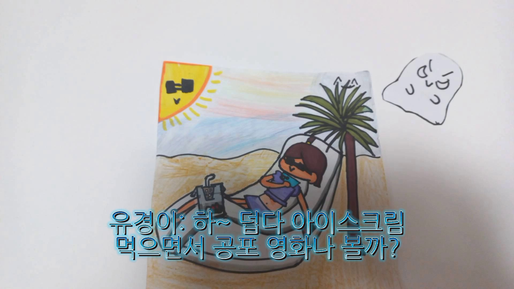
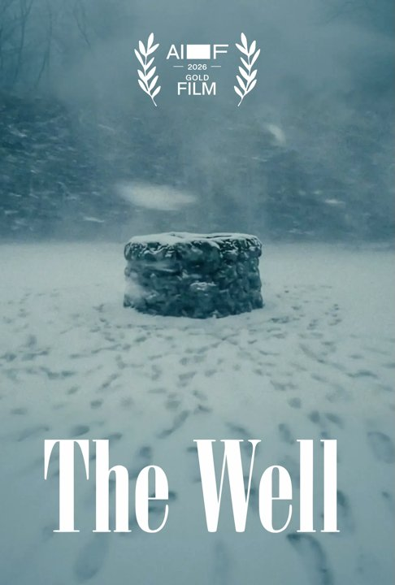
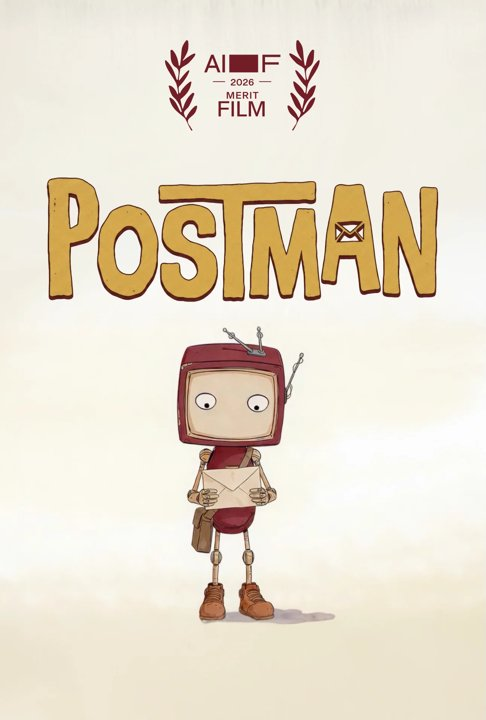
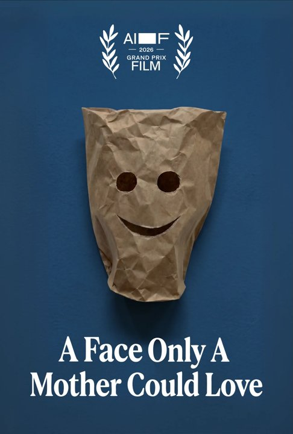
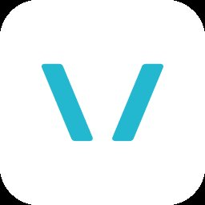

생각을 보이는 이야기로
주제를 고르고 대본을 쓰며 핵심과 근거를 정리합니다. 글·사진·소리·움직임을 조합해 다른 사람이 이해할 수 있는 이야기로 표현합니다.
AI 디지털 시대, 보는 사람에서 만드는 사람으로. 나의 생각을 이야기로 구성하고, 영상으로 표현하고, 함께 나누는 수업을 시작합니다.
AI는 대본의 초안을 제안하고 이미지, 음성, 짧은 장면을 만드는 일을 도와줍니다. 하지만 누구에게 무엇을 전할지, 어떤 장면을 남길지, 결과가 사실과 목적에 맞는지를 결정하는 사람은 우리입니다. 영상 제작을 배운다는 것은 도구 사용과 함께 생각을 정리하고 표현하는 방법을 배우는 일입니다.
주제를 고르고 대본을 쓰며 핵심과 근거를 정리합니다. 글·사진·소리·움직임을 조합해 다른 사람이 이해할 수 있는 이야기로 표현합니다.
AI가 만든 장면과 설명을 그대로 받아들이지 않고 사실을 확인합니다. 출처와 저작권, 등장인물의 동의를 살피며 책임 있게 공유하는 태도를 익힙니다.
기획·촬영·편집의 역할을 나누고 서로의 표현을 비교합니다. 친구의 피드백을 받아 대본과 장면을 수정하는 과정도 중요한 배움입니다.
스톱모션에서는 작은 움직임 하나도 직접 결정합니다. 어떤 이야기를 할지 의논하고, 장면을 준비하고, 결과를 다시 보는 과정은 AI 영상 제작에서도 이어집니다. 이운희 선생님의 블로그에서 수업의 흐름과 실제 제작에 도움이 되는 글을 골랐습니다.
가족사랑 뮤직비디오, 페이퍼 모션, 미래사회 스톱모션으로 이어진 수업 기록입니다. 5학년 학생들의 작품 30개를 모아 공모전과 상호평가를 진행한 과정을 살펴볼 수 있습니다.
수업에 연결하기
팀 구성 → 이야기 구상 → 소품·리허설 → 촬영·편집 → 공유의 흐름을 수업 설계에 참고해 보세요.
레고판과 종이로 배경을 만들고, 스마트폰의 구도와 위치를 정해 고정하는 방법을 설명합니다. 조금씩 움직이며 촬영하는 과정과 「가방 대소동」 예시도 함께 볼 수 있습니다.
수업에 연결하기
배경·카메라를 고정하고 물체만 조금씩 움직이는 기본 원리를 실습할 때 참고하세요.
앞 장면을 겹쳐 보는 어니언 기능, 프레임 속도, 사진 복사·삭제·삽입, 영상 저장까지 정리한 안내입니다. 글에 연결된 제작 영상으로 조작 과정을 살펴볼 수 있습니다.
수업에 연결하기
장면의 유지 시간과 움직임의 속도를 바꿔 보며 전달 효과를 비교해 보세요.
유휴 교실이 없는 상황에서 복도에 레고 활동 공간을 마련한 기록입니다. 교육과정과 연결한 만들기·스톱모션 촬영 활동과 예약, 정리, 결과 공유의 운영 방법을 담았습니다.
수업에 연결하기
한 번의 체험을 넘어 여러 학급이 함께 사용하는 제작 환경을 계획할 때 참고하세요.
디지털 기초소양, 도구 활용, 스톱모션과 교실놀이까지. 주제별로 모은 영상을 살펴보세요.
수업자료 / 디지털 첫걸음노트북과 태블릿 활용을 배우는 디지털 기초소양 수업자료를 찾아보세요.
YOUTUBE / 코딩교육경상남도교육청 코딩교육인증제 채널에서 코딩교육 관련 영상을 만나보세요.
현재 확인한 10개 목록입니다. 새로 추가된 목록은 유튜브 전체 목록 ↗에서 확인할 수 있습니다.
준비를 마친 뒤 Vrew에서 대본으로 영상을 만들고, Canva에서 사진과 자막을 편집합니다.
사진과 내레이션, 자막을 넣은 30초 영상을 만들어 봅니다. 준비된 실습자료나 직접 가져온 자료를 사용해도 좋습니다.
노트북과 인터넷, 계정을 준비하고 파일을 저장하고 찾는 환경을 설정합니다.
클립, 타임라인, 해상도, 프레임 등 주요 용어를 정리했습니다.
대본 작성, 영상 생성, 편집에 사용하는 도구를 비교합니다.
이미지 생성에서 영상·음성 제작으로 확장된 기술 변화를 정리했습니다.
장면 설명, 조건 지정, 수정 요청의 작성 방법입니다.
30초 영상의 대본과 장면표를 작성합니다.
운영체제에 맞는 설치와 로그인 절차입니다.
대본을 입력해 음성·자막·장면으로 구성된 초안을 생성합니다.
자동 초안에서 어색한 장면과 자막을 고치고 MP4를 저장합니다.
Canva 교육용 계정을 신청하고 수업 자료를 만들 작업 공간을 준비합니다.
사진, 글자, 도형을 따로 선택하고 정렬, 잠금, 복제합니다.
사진 편집, 자막, 음성, 애니메이션 등 Canva의 주요 기능을 정리했습니다.
AI 이미지의 글자와 그림을 분리해 수정합니다.
6장면의 길이, 음성, 자막을 조절하고 MP4로 저장합니다.
원본 공동 편집과 개인 사본 배부를 구분하고 피드백을 반영합니다.
이미지에 움직임을 적용해 영상 클립을 생성합니다.
모델별 영상 예시, 제작 프롬프트, 생성 절차를 정리했습니다.
사진, 촬영 클립, 생성 클립을 연결하고 소리를 정리합니다.
교사와 학생이 만든 레고 리뷰, 제작 과정, 교육 영상을 모았습니다.
카메라 조건에 따른 생성 결과를 비교합니다.
공익광고와 디지털 시민교육 영상의 수업 활용 예시입니다.
실습에 사용할 대본, 이미지, 자막, 장면표를 내려받을 수 있습니다.
작업에 필요한 영상 제작 도구와 사용 안내를 모았습니다.
필요한 도구의 도움말과 사용 조건을 찾아봅니다.
레고·그림 스톱 모션과 학생 영상 제작 사례입니다.
아이들과 레고·그림 스톱 모션을 제작하고, 완성 작품과 촬영 과정을 기록했습니다. 영상과 사진은 학생의 표현 방식과 작업 과정을 살펴보는 수업 자료로 활용했습니다.
스톱 모션은 물체를 조금씩 움직여 촬영한 사진을 이어 붙이는 기법입니다. 학생들은 물체의 이동 거리, 카메라 위치, 장면 순서를 협의하고 촬영 결과를 수정합니다.
영상 제작 활동에서는 학생이 주제와 표현 방법을 정하고 결과물을 공유합니다. 레고, 그림, 사진 등 준비할 수 있는 재료를 사용합니다.
완성품과 조립 과정을 기록한 영상입니다.
YouTube에서 보기「2022. 여름 계절학교 영상 공모전」에는 「숲의 환경을 지키자!」라는 레고 스톱 모션과 「유경이의 휴대전화를 찾아라!!」라는 그림 스톱 모션이 함께 올라와 있습니다. 「여름 수박전쟁」 게시물에는 영상을 만든 사람과 편집자가 따로 적혀 있습니다. 같은 영상 만들기 활동에서도 소재, 표현 방법, 맡은 역할이 달랐습니다.
아이들과 함께 만든 유튜브 채널 2019clab에는 레고 리뷰와 미니카 제작 과정 영상이 남아 있습니다. 작품을 소개하려면 어떤 부분을 보여줄지 고르고, 만드는 과정을 설명하려면 순서를 정해야 합니다. 영상 제작은 만들기 활동에 설명하고 되돌아보는 시간을 더해 줍니다.
작품 평가는 편집 기술과 내용 전달을 함께 다룹니다. 학생의 표현 의도가 장면에 드러나는지 확인하고, 수정할 부분을 구체적으로 제안합니다.
“오염이 심해진 모습과 정화하는 과정이 잘 나타나 있어요”
위 댓글은 환경오염과 정화 과정의 표현에 대한 피드백입니다. 주제가 드러난 장면을 짚어 주면 학생이 자신의 표현을 검토하는 데 도움이 됩니다.
AI는 대본 초안, 이미지 생성, 자막 제작에 활용할 수 있습니다. 수업에서는 생성 결과의 선택 이유와 수정 내용을 설명하도록 합니다. 초안과 수정본, 촬영 과정 사진은 평가 자료로 활용합니다.
레고 인물과 분홍색 종이 배경으로 만든 장면입니다. 쓰레기를 버리는 상황 뒤에 어떤 변화가 이어지는지 봅니다.
게시물에 레고 스톱 모션으로 소개된 작품입니다. 물체의 움직임과 환경이라는 주제를 어떻게 연결했는지 보며 수업을 시작합니다.
레고 스톱 모션 작품 열기
작품 영상 열기직접 그린 인물과 말 자막으로 이야기를 이어갑니다. 인물을 움직이는 방법과 대사를 보여주는 방법을 비교합니다.
그림으로 만든 스톱 모션 작품입니다. 레고 작품과 나란히 보고, 우리 반에서 준비할 수 있는 재료를 정합니다.
그림 스톱 모션 작품 열기아이들과 함께 만든 레고 리뷰와 미니카 제작 영상을 볼 수 있습니다. 교안의 영상 자료실에 작품 4편을 연결했습니다.
아이들과 만든 채널 열기, 교안에서 영상 보기수업 기록: 2022. 여름 계절학교 영상 공모전
AI 영화와 애니메이션 감상 자료입니다.
AI 생성 애니메이션, AI 화면을 쓴 제작자 작품, AI 영화제 선정작을 모았습니다. 어떤 작품들이 있는지 살펴볼까요?
CJ ENM이 AI 제작 애니메이션으로 소개한 작품입니다. 인물의 표정과 움직임만으로 이야기가 어떻게 전해지는지 감상해 보세요.
YouTube에서 보기The Dor Brothers 공식 사이트에 소개된 AI 영상 작품입니다. 컷의 길이와 색감, 음악이 긴장감을 만드는 작품입니다. 액션 장면은 학생에게 보여주기 전에 확인합니다.
YouTube에서 보기AI로 만든 화면에 편집과 소리 작업을 더한 제작 사례입니다. 제작자가 직접 녹음한 목소리도 사용했습니다.
YouTube에서 보기
Dorian & Daniel의 2026 AI 영화제 Gold 수상작입니다. 장면마다 드러나는 단서를 따라 이야기를 감상해 보세요. 죽음과 미스터리 소재이므로 교사 사전 감상 자료로 둡니다.
영화제에서 작품 선택해 감상
YUUUKI의 2026 AI 영화제 Merit 수상작입니다. 편지를 배달하는 이야기에서 물건 하나가 사건을 이끄는 방식을 봅니다.
영화제에서 작품 선택해 감상
Robert Gaudette의 2026 AI 영화제 Grand Prix 수상작입니다. 외모와 타인의 시선을 다루는 장면은 교사가 먼저 확인합니다.
영화제에서 작품 선택해 감상표정, 음악, 화면 전환 등 작품의 연출 방법을 수업 영상에 적용할 수 있습니다. 상황·변화·결과의 세 장면으로 구성합니다.
Cat Biggie 제작 범위: CJ ENM 공식 설명 · The Dor Brothers 공식 작품 목록 · 제작자의 편집과 음성 작업 설명
노트북과 인터넷, 계정을 준비하고 파일을 저장하고 찾는 환경을 설정합니다.
노트북, 충전기, 마우스, 이어폰을 준비합니다. 연수 전에 인터넷 연결, 계정 로그인, 프로그램 설치를 완료합니다.
| 준비할 것 | 미리 해 둘 일 |
|---|---|
| 노트북·충전기·마우스 | 사진과 영상을 저장할 여유 공간을 확보하고, 충전기를 연결합니다. |
| 인터넷·웹브라우저 | 연수 장소의 Wi-Fi에 연결합니다. Chrome이나 Edge에서 사이트가 열리는지 확인합니다. |
| 이어폰·마이크 | 예시 영상의 소리를 들어 보고, 내레이션을 녹음할 때는 마이크도 시험해 봅니다. |
| Google·Canva·Vrew 계정 | 이메일과 비밀번호를 준비하고 로그인합니다. 학교 계정과 개인 계정 중 자료를 보관할 계정을 정해 두세요. |
| 프로그램 설치 | 설치 권한이 필요한 학교 노트북은 담당자에게 미리 요청합니다. Canva 교육용 인증도 사전에 신청해 주세요. |
대본, 이미지, 영상이 한곳에 있으면 다른 컴퓨터에서도 이어서 작업하기 편합니다. Google Drive에 로그인하고 영상 제작 폴더를 만드세요. 파일 이름에 주제와 날짜를 넣으면 나중에 검색하기 쉽습니다. 예: 새싹관찰_대본_20260918.txt, 새싹관찰_완성.mp4.
아래는 「교사를 위한 적정기술 · 기본도구」 자료의 드라이브와 에브리씽 설정을 영상 제작 준비에 맞게 정리한 내용입니다.
데스크톱용 Drive를 설치하면 웹브라우저를 거치지 않고 파일 탐색기에서 드라이브 폴더를 열 수 있습니다.
설치 안내 화면. Windows 또는 Mac에 맞는 다운로드 버튼을 선택합니다.
설명용 화면. 파일 탐색기에서 Google Drive를 열면 내 드라이브의 파일을 볼 수 있습니다.
| 방식 | 파일 보관 방식 | 영상 작업에 사용할 때 |
|---|---|---|
| 스트리밍 | 클라우드에 보관하고, 파일을 열 때 컴퓨터로 가져옵니다. | 자주 편집할 폴더는 오프라인 사용으로 설정하고 다운로드가 끝난 뒤 작업하면 편합니다. |
| 미러링 | 내 드라이브의 파일을 컴퓨터와 클라우드 양쪽에 보관합니다. | 컴퓨터에 충분한 저장 공간이 필요합니다. |
설명용 화면. 저장 공간과 작업 방식에 따라 스트리밍 또는 미러링을 선택합니다.
작업을 마친 뒤에는 Drive의 동기화 완료 표시를 보고 노트북을 닫아 주세요. 동기화 폴더에서 파일을 지우면 클라우드에도 삭제가 반영됩니다.
에브리씽(Everything)은 파일 이름으로 빠르게 검색하는 Windows 프로그램입니다. 저장한 폴더가 기억나지 않아도 주제나 확장자로 찾을 수 있습니다. Mac에서는 Finder나 Spotlight를 사용합니다.
설치 안내 화면. 자신의 Windows 종류에 맞는 정식 설치파일을 받습니다.
드라이브 파일이 검색되지 않으면 Everything에 해당 폴더를 추가합니다.
설명용 화면. 도구 → 옵션 → 폴더에서 Google Drive의 작업 폴더를 추가합니다.
이 목록은 주기적으로 갱신됩니다. 방금 저장한 파일이 보이지 않으면 해당 폴더를 다시 검색하도록 갱신하세요. 스트리밍 파일을 열 때는 인터넷 연결이 필요할 수 있습니다.
| 검색어 예시 | 찾는 파일 |
|---|---|
| 새싹 관찰 | 이름에 ‘새싹’과 ‘관찰’이 모두 들어 있는 파일 |
| *.mp4 | MP4 영상 파일 |
| 새싹 *.mp4 | 이름에 ‘새싹’이 들어 있는 MP4 영상 |
| dm:today | 오늘 수정한 파일 |
도구 → 옵션 → 제외의 제외할 파일에 *.lnk;*.tmp;*.url을 입력하면 바로가기와 임시 파일을 숨길 수 있습니다. 파일을 삭제하는 설정은 아닙니다.
설명용 화면. 필요하면 제외할 파일에 바로가기와 임시 파일 확장자를 넣습니다.
클립, 타임라인, 해상도, 프레임 등 주요 용어를 정리했습니다.
편집 프로그램에서 사용하는 주요 용어를 정리했습니다. 용어의 뜻과 적용 예시를 함께 제시합니다.
시청자미디어재단 · 3분 19초. 영상 편집 용어를 짧게 소개하는 강의입니다.
YouTube에서 보기비됴클래스 · 13분 39초. 영상의 기본 단위와 화면 크기를 설명합니다.
YouTube에서 보기| 용어 | 뜻 | 예시 |
|---|---|---|
| 원본 파일 | 촬영하거나 내려받은 사진·영상·소리 파일입니다. | 휴대전화로 찍은 교실 영상, 직접 녹음한 내레이션 |
| 프로젝트 | 클립의 순서와 효과, 자막 등 편집 내용을 저장한 작업입니다. | 다음 날 자막을 고치려면 프로젝트를 다시 엽니다. |
| 클립 | 편집에 사용하는 영상·사진·소리의 한 조각입니다. | 20초 영상에서 필요한 5초만 잘라 쓸 수 있습니다. |
| 타임라인 | 클립이 어느 시간에 재생될지 배치하는 작업 영역입니다. | 앞에 놓인 클립부터 차례로 재생됩니다. |
| 재생 헤드·재생선 | 현재 보고 있는 시간을 가리키는 표시입니다. | 재생선을 5초로 옮기면 그 시점의 화면이 보입니다. |
| 트랙·레이어 | 영상, 자막, 음악 등을 나누어 놓는 줄이나 층입니다. | 배경 영상 위에 자막을 얹고 음악을 함께 재생합니다. |
| 용어 | 뜻 | 예시 |
|---|---|---|
| 픽셀(Pixel) | 디지털 이미지를 이루는 작은 점입니다. | 사진을 크게 확대하면 작은 격자처럼 보입니다. |
| 해상도(Resolution) | 가로와 세로의 픽셀 수입니다. | 1920×1080은 가로 1,920개, 세로 1,080개의 픽셀로 된 화면입니다. |
| 화면 비율(Aspect ratio) | 화면의 가로와 세로 길이의 비율입니다. | 16:9는 가로형, 9:16은 세로형입니다. 해상도와는 다른 개념입니다. |
| 프레임(Frame) | 영상을 이루는 정지 화면 한 장입니다. | 스톱 모션에서 찍은 사진 한 장을 떠올리면 쉽습니다. |
| 프레임레이트(FPS) | 1초 동안 재생되는 프레임 수입니다. | 30fps 영상은 1초에 30장의 화면을 보여줍니다. |
| 타임코드(Timecode) | 영상 안의 위치를 시간으로 표시한 값입니다. | 00:00:05:12는 보통 0시간 0분 5초 뒤의 12번째 프레임을 뜻합니다. |
| 용어 | 뜻 | 예시 |
|---|---|---|
| 트림(Trim) | 클립의 시작이나 끝을 줄이는 작업입니다. | 촬영 시작 전 기다린 부분을 덜어 냅니다. |
| 분할(Split) | 하나의 클립을 원하는 위치에서 나누는 작업입니다. | 설명이 끝나는 지점에서 두 클립으로 나눕니다. |
| 컷(Cut) | 한 화면에서 다음 화면으로 바로 넘어가는 연결입니다. | 교실 전체를 보여준 뒤 학생 작품을 가까이 보여줍니다. |
| 전환(Transition) | 장면이 바뀌는 방식이나 효과입니다. | 앞 화면과 뒤 화면이 겹치며 바뀌는 디졸브가 있습니다. |
| 페이드 인·아웃 | 화면이나 소리가 서서히 나타나거나 사라지는 효과입니다. | 영상 끝에서 음악 소리를 천천히 줄입니다. |
| 키프레임(Keyframe) | 특정 시점의 위치·크기·음량 등을 지정하는 지점입니다. | 시작과 끝의 사진 크기를 다르게 정해 확대 효과를 만듭니다. |
| 용어 | 뜻 | 예시 |
|---|---|---|
| 내레이션·BGM | 내레이션은 설명하는 목소리, BGM은 배경음악입니다. | 설명하는 목소리가 잘 들리도록 음악을 작게 조절합니다. |
| 렌더링(Rendering) | 편집 내용과 효과를 계산해 화면·소리를 만드는 과정입니다. | 효과가 많으면 처리 시간이 길어질 수 있습니다. |
| 인코딩(Encoding)·코덱(Codec) | 인코딩은 정해진 방식으로 데이터를 변환하는 과정이고, 코덱은 압축·복원에 쓰는 방식이나 도구입니다. | H.264는 널리 쓰이는 영상 코덱입니다. |
| 비트레이트(Bitrate) | 1초에 사용하는 데이터의 양입니다. | 같은 조건에서 비트레이트가 높으면 대체로 용량도 커집니다. |
| MP4 | 영상과 소리 등을 담는 파일 형식입니다. | 같은 MP4라도 코덱과 화질 설정은 다를 수 있습니다. |
| 내보내기(Export) | 편집한 내용을 재생 가능한 파일로 저장하는 과정입니다. | 프로젝트를 MP4로 내보내어 학생들에게 보여줍니다. |
대본 작성, 영상 생성, 편집에 사용하는 도구를 비교합니다.
대본 작성, 이미지 생성, 영상 편집 등 작업별 도구를 정리했습니다.
이미지에 움직임을 더해 영상으로 만드는 도구입니다.
수업 예시: 종이로 만든 우주선을 천천히 움직이는 수업 도입 장면
사진을 움직이거나 짧은 변형 효과를 만드는 도구입니다.
수업 예시: 학생이 만든 종이 캐릭터의 짧은 등장 장면
이미지와 문장을 바탕으로 움직임을 만들고 장면을 탐색합니다.
수업 예시: 직접 만든 미니어처 마을을 둘러보는 상상 장면
문장이나 이미지를 바탕으로 장면을 생성합니다. 이미지와 영상을 한 제작 과정에서 다룰 때 살펴볼 도구입니다.
수업 예시: 역사 이야기의 상상 배경, 과학 영상의 제목용 배경
글자와 그림을 함께 넣은 이미지 시안을 만드는 도구입니다.
수업 예시: 독서 소개 영상의 표지와 제목 화면
입력한 대본을 음성으로 만들어 내레이션을 비교할 수 있습니다.
수업 예시: 같은 안내문을 두 말투로 듣고 전달이 쉬운 쪽 고르기
사진과 영상, 글자를 배치해 영상을 만드는 웹 편집기입니다.
수업 예시: 행사 사진으로 만드는 짧은 학급 소식 영상
| 만들 영상 | 기본 경로 | 다른 방법 |
|---|---|---|
| 대본을 읽어 주는 설명 영상 | ChatGPT 또는 Gemini로 대본 → Vrew | Canva에 직접 녹음한 음성과 자막을 넣습니다. |
| 사진과 글자가 중심인 안내 영상 | Canva에서 디자인과 영상 편집 | Adobe Express에서 같은 자료를 배치합니다. |
| 촬영한 행사나 활동 기록 | CapCut에서 컷 편집 → 자막과 소리 | Canva 또는 Clipchamp로 기본 편집을 합니다. |
| 촬영하기 어려운 가상 장면 | Flow 또는 Higgsfield → Canva 또는 CapCut | 정지 이미지와 움직임 효과로 표현합니다. |
| 반복 사용할 수업 영상 | Canva 템플릿과 공통 장면표 | Vrew 프로젝트 사본에서 대본을 바꿉니다. |
Vrew의 텍스트 영상 제작은 대본, 음성, 자막, 이미지 등을 조합하는 작업입니다. Flow와 Higgsfield의 영상 생성은 장면 속 움직임을 만드는 작업입니다. 같은 “AI 영상”이라도 수정하는 방법과 필요한 시간이 다릅니다.
| 도구 | 이용 전 알아둘 점 |
|---|---|
| Vrew | 무료 플랜의 남은 음성, 이미지 사용량과 내보내기 조건을 확인합니다. |
| Canva | 교육용 자격을 확인하되 외부 앱과 AI 사용량은 별도로 확인합니다. |
| Flow | 계정에 표시되는 잔여량과 생성 비용을 기준으로 선택합니다. |
| Higgsfield | 계정에 표시된 크레딧과 생성 비용을 보고 이용합니다. |
| CapCut | Pro 요소가 들어갔는지 내보내기 전에 확인합니다. |
| Clipchamp | 개인용 무료 플랜의 1080p 내보내기를 대체 경로로 검토합니다. |
이미지 생성에서 영상·음성 제작으로 확장된 기술 변화를 정리했습니다.
초기 자료에서는 이미지 생성, 이미지 편집, 그림 움직이기, 목소리 만들기를 서로 다른 서비스에서 수행했습니다. 지금은 한 편집기 안에서 여러 기능을 이어서 쓰는 경우가 늘었습니다.
| 흐름 | 당시 자료, 공식 기록 | 영상 제작에 생긴 변화 |
|---|---|---|
| 2022 , 문장을 그림으로 | DALL·E 2는 자연어 이미지 생성, 부분 편집, 변형을 소개했습니다. | 무엇을 그릴지 구체적으로 설명하고 결과를 골라 수정합니다. |
| 2023 , 접근 경로 확장 | Bing Image Creator가 검색 서비스 안에 이미지 생성을 넣었습니다. PlaygroundAI, DALL·E, Bing처럼 들어가는 곳이 달라도 문장으로 이미지를 요청한다는 공통점이 있었습니다. | 서비스 이름과 안에서 쓰는 모델 이름을 구분합니다. |
| 그림에서 움직임으로 | Animated Drawings에서는 직접 그린 인물의 관절을 지정해 움직임을 만들었습니다. | 그림 관절을 움직이는 방식과 장면 전체를 생성하는 방식을 비교합니다. |
| 복합, 개인화 도구 | Vrew는 대본, 음성, 자막, 장면을 조합합니다. Character.AI, Wrtn은 역할과 목적을 정한 대화 도구의 사례였습니다. | 전문 도구와 범용 대화형 AI의 역할이 겹치기 시작했습니다. |
| 현재 , 생성과 편집의 연결 | Canva는 생성, 레이어, 영상 편집을 연결하고, Flow, Higgsfield는 장면 생성과 연출을 다룹니다. | 생성한 장면을 편집기에서 다듬어 한 편의 영상으로 완성할 수 있습니다. |
생성형 AI는 학습한 패턴을 바탕으로 새 결과를 만듭니다. 언어, 이미지, 음성 모델은 표현 방식과 학습 방법이 서로 같지 않습니다. 여러 입력과 출력을 다루는 것을 멀티모달이라고 부릅니다.
표현력, 사고력, 의사소통과 교사의 수업 자료 제작에 활용할 수 있습니다.
클로바노트의 음성 인식을 자막 초안 작성에 활용했습니다. 인식된 문장을 수정해 자막 제작 시간을 줄였습니다.
코딩인증제 채널 ↗| 자막 제작 | 영상 제작 전반 |
|---|---|
| 말소리를 글로 옮겨 자막 준비 | 생각을 대본과 장면표로 정리 |
| 촬영한 재료를 직접 골라 편집 | 이미지·영상·음성을 생성하고 촬영 재료와 연결 |
| 완성한 영상을 보며 자막 수정 | 초안을 비교하고 내용·장면·자막을 함께 수정 |
AI 활용 범위는 대본 작성, 이미지·영상 생성, 음성 제작으로 확대됐습니다. 생성한 자료를 목적에 맞게 수정하고 편집해 영상으로 완성합니다.
스톱 모션과 AI 영상 제작은 모두 장면 구성과 순서 결정이 필요합니다. 제작 방식은 다르지만, 전달할 내용에 맞게 장면을 선택하고 수정하는 과정은 같습니다.
학생은 장면을 비교하고 선택 이유를 설명합니다. 사실과 다른 내용을 수정하고 친구의 제안을 검토하는 활동으로 사고력과 의사소통을 연습할 수 있습니다.
평가에는 완성도와 수정 과정을 함께 반영합니다. 초안과 수정본을 비교하고, 학생에게 변경 이유를 설명하도록 합니다.
수정 내용과 이유를 정리한 예시입니다.
| 초안 | 수정본 | 설명할 이유 |
|---|---|---|
| 한 화면에 긴 자막을 모두 넣음 | 핵심 문장을 나누고 읽을 시간을 확보 | 친구가 화면을 보며 끝까지 읽을 수 있도록 |
| 새싹이 순식간에 자라는 생성 장면 | 실제 관찰 사진으로 교체 | 실제로 관찰한 변화와 상상한 장면을 구분하려고 |
| 친구마다 다른 장면 순서를 제안 | 두 순서로 재생한 뒤 하나를 선택 | 처음 보는 사람이 이해하기 쉬운 순서를 찾으려고 |
교사는 AI 초안을 수업 목표와 자신의 설명 방식에 맞게 수정합니다. 대본, 장면, 자막의 내용을 일치시키면 교육 의도를 구체적으로 전달할 수 있습니다.
자막 작성과 반복 편집 시간을 줄이면 수업 설계와 학생 피드백에 더 많은 시간을 쓸 수 있습니다.
피드백에서는 학생의 장면 선택, 수정 이유, 역할 분담을 구체적으로 다룹니다.
장면 설명, 조건 지정, 수정 요청의 작성 방법입니다.
영상을 본 뒤 아래 Canva 대본·프롬프트 예시를 함께 살펴보세요. 전달할 내용을 어떤 순서로 구성했는지, 각 장면의 화면과 내레이션이 어떻게 이어지는지 비교합니다.
YouTube에서 보기| 작업 | 프롬프트에 담을 내용 | 예시 |
|---|---|---|
| 대본 | 시청자, 목적, 길이, 사실 자료, 출력 형식 | 초등학생이 볼 30초 관찰 안내. 주장 하나, 행동 하나. |
| 이미지 | 주인공, 장소, 구도, 빛, 색, 제외할 것 | 빈 교실 창가, 유리병 새싹, 자연광, 글자 없음. |
| 영상 | 시작 상태, 움직임, 카메라, 유지할 것 | 카메라 고정, 잎만 미세하게 흔들림, 병 모양 유지. |
| 수정 | 유지할 부분, 바꿀 부분, 비교 기준 | 배경과 색은 유지하고 자막만 두 줄로 줄여 줘. |
빈 교실 창가의 투명 유리병에 작은 새싹이 있다. 따뜻한 오후 햇빛, 책과 노트가 놓인 책상, 차분한 색감. 가로 구도이며 오른쪽에 제목을 넣을 여백을 둔다. 사람, 글자, 로고는 넣지 않는다.
ChatGPT 또는 Gemini에서 새 대화를 엽니다. 아래 예시 요청문을 복사합니다.
“초등학생이 볼 새싹 관찰 안내, 30초, 6장면”을 적고 요청합니다.
답변을 읽고 “2번 장면만 관찰 가능한 행동으로 바꿔 줘. 나머지는 유지해 줘”라고 이어 씁니다.
소리 내어 읽을 문장만 따로 복사해 Vrew에 넣습니다. 화면 설명은 장면표에 남깁니다.
30초 영상의 대본과 장면표를 작성합니다.
어제와 무엇이 달라졌을까?
화면: 화분 전체같은 자리에서 사진 찍기
화면: 고정한 카메라잎의 모양 살펴보기
화면: 잎 부분 확대달라진 점 한 가지 적기
화면: 관찰 기록장친구의 기록과 비교하기
화면: 두 기록 나란히작은 변화를 기록해요
화면: 화분과 제목이 장면표를 바탕으로 다른 주제의 영상도 기획할 수 있습니다. 화면 설명을 보고 사진이나 영상을 준비하고, 내레이션은 Vrew에 넣어 음성으로 만듭니다.
영상을 본 뒤 내가 고른 안전 수칙을 ‘상황, 행동, 마지막 자막’으로 나누어 적습니다.
YouTube에서 보기시나리오는 누가 무엇을 보며 어떤 말을 듣는지 정하는 작업입니다. 먼저 시청자가 영상 끝에 할 행동을 적습니다.
“환경 영상” 대신 “초등학생이 점심시간에 빈 교실 전등을 확인하도록 안내하는 30초 영상”으로 정합니다.
ChatGPT 또는 Gemini에 설명형, 이야기형 기획안을 요청합니다. 촬영할 수 있는 장면과 준비된 자료를 기준으로 한 안을 고릅니다.
시간, 화면, 내레이션, 자막, 필요한 파일을 표로 받습니다. 장면별 시간을 더해 전체 분량을 맞춥니다.
대본을 소리 내어 읽거나 Vrew 음성으로 들어 봅니다. 30초를 넘으면 말을 빠르게 만들기 전에 반복 문장을 지웁니다.
날짜, 수치, 과학 설명은 교과서나 공식 자료와 대조합니다. 가상의 이야기는 가상이라고 표시합니다.
너는 교사가 만드는 짧은 교육 영상의 구성 편집자다. 시청자: 초등학생 주제: 창가의 새싹을 매일 관찰하고 기록하기 목표: 같은 자리에서 사진을 찍고 어제와 달라진 점 한 가지를 적게 한다. 전체 길이: 30초. 장면 6개, 각 5초. 자료: 새싹 이미지 1장, 노트 이미지 또는 단색 배경. 촬영하지 않은 성장을 실제 관찰처럼 말하지 않는다. 시간 / 화면 / 내레이션 / 화면 자막 / 제작 도구 표로 작성해 줘. 숫자나 연구 결과를 지어내지 말고, 한 장면에는 행동 하나만 넣어 줘.
방금 장면표를 검토해 줘. 총 길이가 30초인지 확인하고, 내레이션을 실제로 읽으면 긴 장면을 표시해 줘. 추상적인 표현을 눈으로 볼 수 있는 행동으로 바꿔 줘. 기존 메시지와 장면 수는 유지하고 바꾼 이유를 옆에 적어 줘.
각 주제에 시나리오 작성용과 이미지 기반 영상 생성용 프롬프트가 있습니다. 대괄호 안의 자료를 채운 뒤 복사하세요. 영상 생성은 시작 이미지를 먼저 넣고, 해당 도구에서 길이와 화면 비율을 설정합니다.
친구를 촬영하기 전에 허락을 구하고, 공유 전에도 동의를 확인한다.
대상: 초등 1~2학년 주제: 디지털 사진 예절 목표: 친구를 촬영하기 전에 허락을 구하고, 공유 전에도 동의를 확인한다. 전체 길이: 30초, 6장면, 장면당 5초. 장면 구성: 0~5초: 태블릿을 든 인물 / 5~10초: 촬영해도 되는지 묻기 / 10~15초: 친구의 응답 기다리기 / 15~20초: 허락받은 사진 촬영 / 20~25초: 공유 여부 묻기 / 25~30초: 촬영과 공유 전에 물어봐요 내 자료: [사진·책 정보·학교 안내·확인한 사실을 입력] 시간 / 화면 / 내레이션 / 자막 / 준비할 자료를 표로 작성해 줘. 내레이션은 장면당 짧은 한 문장으로 쓰고, 자막은 핵심 내용만 남겨 줘. 제공하지 않은 사실, 날짜, 수치, 인용문은 지어내지 말고 [확인 필요]로 표시해 줘. 촬영할 장면과 생성할 장면을 구분해 줘.
밝은 교실, 태블릿을 든 종이 인형과 맞은편 친구. 두 인물의 얼굴과 옷은 참조 이미지와 동일하다. 태블릿을 든 인형이 팔을 조금 내리고 친구를 바라본다. 친구는 천천히 한 번 고개를 끄덕인다. 고정 카메라, 가로 16:9, 5초. 태블릿 화면은 단색으로 유지한다. 글자, 자막, 로고, 새 인물을 생성하지 않는다.
빈 종이 상자를 접어 정해진 수거함에 넣는 과정을 설명한다.
대상: 초등학생 주제: 분리배출 스톱모션 목표: 빈 종이 상자를 접어 정해진 수거함에 넣는 과정을 설명한다. 전체 길이: 30초, 6장면, 장면당 5초. 장면 구성: 0~5초: 책상 위 빈 상자 / 5~10초: 남은 내용물 확인 / 10~15초: 상자 펼치기 / 15~20초: 납작하게 접기 / 20~25초: 종이 수거함에 넣기 / 25~30초: 우리 학교 분리배출 기준 확인 내 자료: [사진·책 정보·학교 안내·확인한 사실을 입력] 시간 / 화면 / 내레이션 / 자막 / 준비할 자료를 표로 작성해 줘. 내레이션은 장면당 짧은 한 문장으로 쓰고, 자막은 핵심 내용만 남겨 줘. 제공하지 않은 사실, 날짜, 수치, 인용문은 지어내지 말고 [확인 필요]로 표시해 줘. 촬영할 장면과 생성할 장면을 구분해 줘.
참조 이미지의 레고 인물과 납작하게 접힌 종이 상자를 사용한다. 인물이 상자 하나를 양손으로 들고 바로 옆의 파란 수거함에 천천히 넣는다. 레고 스톱모션 질감, 고정 카메라, 5초, 가로 16:9. 상자의 수와 수거함 위치를 유지한다. 손이나 부품이 늘어나지 않게 한다. 글자와 로고는 넣지 않는다.
책의 인물과 사건을 소개하고 읽고 싶은 이유를 전한다.
대상: 초등 3~4학년 주제: 도서 소개 목표: 책의 인물과 사건을 소개하고 읽고 싶은 이유를 전한다. 전체 길이: 30초, 6장면, 장면당 5초. 장면 구성: 0~5초: 책 표지 사진 / 5~10초: 주인공 소개 / 10~15초: 사건의 시작 / 15~20초: 궁금한 점 / 20~25초: 추천 이유 / 25~30초: 책 제목과 작가 내 자료: [사진·책 정보·학교 안내·확인한 사실을 입력] 시간 / 화면 / 내레이션 / 자막 / 준비할 자료를 표로 작성해 줘. 내레이션은 장면당 짧은 한 문장으로 쓰고, 자막은 핵심 내용만 남겨 줘. 제공하지 않은 사실, 날짜, 수치, 인용문은 지어내지 말고 [확인 필요]로 표시해 줘. 촬영할 장면과 생성할 장면을 구분해 줘.
참조 이미지의 닫힌 책 한 권이 나무 책상 위에 놓여 있다. 창문 그림자가 책 옆으로 천천히 움직인다. 카메라는 책을 향해 아주 느리게 접근한다. 5초, 가로 16:9. 표지 그림, 제목, 책의 두께를 바꾸지 않는다. 책을 열거나 새 글자를 생성하지 않는다.
도서관에서 책을 빌리는 위치와 순서를 안내한다.
대상: 신입생 주제: 학교 공간 안내 목표: 도서관에서 책을 빌리는 위치와 순서를 안내한다. 전체 길이: 30초, 6장면, 장면당 5초. 장면 구성: 0~5초: 도서관 입구 / 5~10초: 책 찾기 / 10~15초: 대출대 위치 / 15~20초: 대출 절차 / 20~25초: 반납 위치 / 25~30초: 이용 시간 안내 내 자료: [사진·책 정보·학교 안내·확인한 사실을 입력] 시간 / 화면 / 내레이션 / 자막 / 준비할 자료를 표로 작성해 줘. 내레이션은 장면당 짧은 한 문장으로 쓰고, 자막은 핵심 내용만 남겨 줘. 제공하지 않은 사실, 날짜, 수치, 인용문은 지어내지 말고 [확인 필요]로 표시해 줘. 촬영할 장면과 생성할 장면을 구분해 줘.
참조 사진 속 도서관 내부를 그대로 사용한다. 책장과 대출대의 위치를 유지하며 카메라만 오른쪽으로 아주 천천히 이동한다. 이동 거리는 작게, 5초, 가로 16:9. 사람을 추가하지 않는다. 표지판 글자와 책 배열을 바꾸지 않는다. 사실 안내에는 실제 촬영 사진을 우선하고 이 생성 영상은 연출 예시로 표시한다.
마지막으로 교실을 나가는 사람이 전등을 확인한다.
대상: 초등학생 주제: 교실 절전 공익광고 목표: 마지막으로 교실을 나가는 사람이 전등을 확인한다. 전체 길이: 30초, 6장면, 장면당 5초. 장면 구성: 0~5초: 사람이 없는 밝은 교실 / 5~10초: 켜진 전등 / 10~15초: 출입문 앞 인물 / 15~20초: 전등 스위치 확인 / 20~25초: 소등한 교실 / 25~30초: 마지막 사람이 전등을 확인해요 내 자료: [사진·책 정보·학교 안내·확인한 사실을 입력] 시간 / 화면 / 내레이션 / 자막 / 준비할 자료를 표로 작성해 줘. 내레이션은 장면당 짧은 한 문장으로 쓰고, 자막은 핵심 내용만 남겨 줘. 제공하지 않은 사실, 날짜, 수치, 인용문은 지어내지 말고 [확인 필요]로 표시해 줘. 촬영할 장면과 생성할 장면을 구분해 줘.
참조 이미지의 작은 레고 교실. 인물 한 명이 문 옆 스위치를 한 번 누른다. 천장 전등만 꺼지고 창밖의 낮빛은 유지된다. 고정 카메라, 5초, 가로 16:9. 책상, 창문, 인물의 얼굴과 옷을 유지한다. 추가 인물이나 글자는 넣지 않는다.
확인한 사진과 연표를 바탕으로 지역의 변화를 설명한다.
대상: 초등 5~6학년 주제: 지역 역사 소개 목표: 확인한 사진과 연표를 바탕으로 지역의 변화를 설명한다. 전체 길이: 30초, 6장면, 장면당 5초. 장면 구성: 0~5초: 지역 이름 / 5~10초: 과거 사진과 연도 / 10~15초: 당시 모습 / 15~20초: 현재 사진 / 20~25초: 달라진 점 / 25~30초: 자료 출처 내 자료: [사진·책 정보·학교 안내·확인한 사실을 입력] 시간 / 화면 / 내레이션 / 자막 / 준비할 자료를 표로 작성해 줘. 내레이션은 장면당 짧은 한 문장으로 쓰고, 자막은 핵심 내용만 남겨 줘. 제공하지 않은 사실, 날짜, 수치, 인용문은 지어내지 말고 [확인 필요]로 표시해 줘. 촬영할 장면과 생성할 장면을 구분해 줘.
참조 이미지의 종이로 만든 옛 거리 모형. 카메라는 정면에 고정하고 나무의 종이 잎만 아주 조금 흔들린다. 5초, 가로 16:9. 건물 구조와 간판을 바꾸지 않는다. 사람과 차량을 새로 만들지 않는다. 실제 역사 영상이 아닌 재현 이미지에 움직임을 준 예시로 사용한다.

운영체제에 맞는 설치와 로그인 절차입니다.
공식 사이트에서 무료 다운로드를 누릅니다. 내려받은 설치 파일을 열고 설치를 마친 뒤 Vrew를 실행합니다. 학교 PC에서 설치 권한이 없는 경우 아래 Canva 실습으로 이어갑니다.
주소창에 vrew.ai를 입력합니다. 검색 광고의 별도 설치 도우미가 아닌 Vrew 공식 사이트의 무료 다운로드를 선택합니다.
Windows는 Windows 설치 파일을 받습니다. Mac은 Mac용 파일을 선택하고 칩 종류 선택이 나오면 Apple 메뉴의 “이 Mac에 관하여”에서 확인합니다. 파일이 끝까지 받아졌는지 봅니다.
다운로드 폴더에서 받은 설치 파일을 엽니다. 표시된 게시자와 파일 출처를 확인하고 설치를 진행합니다. 학교 관리 권한이 필요하면 담당자에게 설치를 요청합니다. 보안 경고를 무조건 해제하지 않습니다.
받은 dmg 파일을 열고 안내에 따라 Vrew를 응용 프로그램 폴더로 옮깁니다. 응용 프로그램에서 실행합니다. 운영체제 보안 확인이 나오면 공식 다운로드 파일인지 먼저 확인합니다.
앱이 제시하는 Google 또는 이메일 가입, 로그인 경로를 사용합니다. 이메일 인증은 받은편지함과 스팸함을 확인합니다. 로그인 후 사용할 수 있는 기능과 남은 사용량을 볼 수 있습니다.
기존 계정이 있으면 같은 방식으로 로그인합니다. Google 가입자는 위 버튼을, 이메일 가입자는 이메일과 비밀번호 칸을 사용합니다. 처음 쓰면 아래 회원가입으로 시작합니다.
새 프로젝트 화면을 열고 스피커 출력, 저장 폴더, 로그인 상태를 확인합니다. 요금제 화면에서 남은 AI 음성, 이미지 사용량을 봅니다.
짧은 테스트 프로젝트를 만들고 편집 프로젝트를 저장합니다. 가능하면 5초 MP4도 내보내어 재생합니다. 저장과 내보내기를 구분합니다.
대본을 입력해 음성·자막·장면으로 구성된 초안을 생성합니다.
파일 또는 첫 화면의 “새로 만들기”에서 “텍스트로 비디오 만들기”를 선택합니다. 이미 촬영한 영상에 자막만 붙이는 “영상, 음성 불러오기”와 구분합니다.
새로 만들기 창에서 오른쪽 위의 텍스트로 비디오 만들기를 누릅니다.
교실 화면에 보여줄 영상은 가로 16:9로 시작합니다. 세로 영상이 목적이면 9:16을 먼저 고릅니다. 스타일은 교육, 설명에 맞는 하나를 선택합니다.
처음에는 기본 스타일로 시작합니다. 원하는 스타일을 고른 뒤 오른쪽 아래 다음을 누릅니다.
자료실의 대본을 복사해 대본 입력란에 넣습니다. 장면 번호, 표 제목, 제작 지시를 음성으로 읽지 않도록 본문만 넣습니다. 주제만 넣어 자동 작성했다면 생성 전에 내용을 검토합니다.
오른쪽 대본 칸에 읽을 문장만 붙여 넣습니다. 카메라 지시나 장면 설명은 내레이션에서 빼고 다음을 누릅니다.
한국어 음성에서 목소리 하나를 골라 첫 문장을 미리 듣습니다. 발음과 속도를 확인합니다. 유료 표시와 남은 글자 수를 봅니다.
자동 추천 이미지, 영상, AI 이미지, 내 파일 가운데 수업 목적에 맞는 재료를 선택합니다. 실습 첫 생성은 제공 이미지와 이용 가능한 기본 기능으로 진행합니다.
음악은 음성을 가리지 않는 곡을 선택합니다. 첫 제작은 음악 없이 시작해도 됩니다. 자막은 두 줄 안팎으로 읽기 쉽게 설정합니다.
왼쪽에서 가로·세로 비율을 고르고 AI 목소리를 들어봅니다. 배경 음악은 목소리를 가리지 않게 선택합니다. 오른쪽 아래 완료를 누르면 영상 제작이 시작됩니다.
완성된 초안을 처음부터 재생합니다. 말과 이미지가 맞는지, 한 문장이 너무 길지 않은지, 특정 단어를 잘못 읽지 않는지 확인합니다.
같은 정보를 설명형과 질문형으로 작성해 각각 음성으로 들어 보세요. 시청자에게 필요한 정보가 빠지지 않으면서 짧게 전달되는 쪽을 고릅니다.
자동 초안에서 어색한 장면과 자막을 고치고 MP4를 저장합니다.
오른쪽 문장 목록에서 틀린 자막을 선택해 고칩니다. 왼쪽 미리보기에서 화면과 말을 함께 확인합니다.
| 수정할 것 | 조작과 확인 |
|---|---|
| 화면과 말이 다름 | 해당 클립을 선택하고 이미지, 비디오 교체 메뉴에서 내 새싹 파일을 넣습니다. 다른 장면까지 바뀌지 않았는지 재생합니다. |
| 자막이 길거나 틀림 | 자막 텍스트를 고치고 필요한 위치에서 문장을 나눕니다. 자막 수정이 AI 음성 변경까지 반영됐는지 따로 들어 봅니다. |
| AI 음성 발음 | 숫자, 약어를 읽는 말로 바꾸거나 음성용 원문을 수정해 다시 생성합니다. “AI”와 “에이아이”처럼 실제 발음을 비교합니다. |
| 빈 구간 | 무음 길이를 들어 보고 줄입니다. 문장이 끝나는 쉼은 남기고, 말이 끊겨 들리지 않는지 재생해 확인합니다. |
| 음악이 큼 | 내레이션이 또렷하게 들릴 때까지 배경 음악을 낮춥니다. 시작, 끝은 부드럽게 줄입니다. |
| 전환 효과 | 장면마다 다른 효과를 넣기 전에 기본 컷으로 연결합니다. 효과는 의미를 돕는 곳에만 넣습니다. |
미리보기의 자막을 누르면 서식 도구가 뜹니다. 글꼴과 크기를 먼저 정하고 색과 테두리를 조절합니다.
다시 고칠 수 있도록 Vrew 프로젝트를 저장합니다. 외부 사진과 영상도 같은 실습 폴더에 유지합니다.
내보내기에서 영상 파일을 선택합니다. 가로 실습은 1920×1080을 목표로 하되 계정에서 가능한 해상도를 확인합니다. 파일 이름은 01_새싹_초안.mp4로 지정합니다.
파일을 다른 재생기로 열어 처음, 중간, 끝을 확인합니다. 자막 잘림, 소리 누락, 검은 화면, 워터마크, 유료 요소 안내를 확인합니다.
Vrew 완성본을 Canva나 CapCut에 넣으면 한 개의 영상 클립으로 들어갑니다. 자막이 영상에 붙었다면 개별 글자로 고칠 수 없습니다. 세부 수정은 원래 Vrew 프로젝트에서 합니다.
위쪽 내보내기를 누른 뒤 영상 파일(mp4)을 선택합니다. 프로젝트 파일은 다음 수정용으로 따로 보관합니다.
읽는 자막은 짧게 줄이고, 음성에는 필요한 설명을 남겨 보세요. 자막 수정이 음성에 반영되는 방식은 선택한 편집 기능에 따라 확인합니다.
목소리와 화면 스타일을 고르는 위치를 봅니다. 같은 문장으로 음성을 바꿔 듣고 말의 속도를 비교합니다.
브루 시연 페이지 열기Canva 교육용 계정을 신청하고 수업 자료를 만들 작업 공간을 준비합니다.
수업 자료를 학생에게 배정하는 공식 소개 화면입니다. 교육용 공간에서 만든 자료를 공유할 때 참고하세요. 영어 화면이며, 교사 인증 신청 화면과는 다릅니다.
공식 기능 안내Canva Education은 자격을 충족하는 교사, 학교를 위한 교육용 서비스입니다. 일반 무료 계정, 개인 Pro, 교육용 공간은 구분됩니다.
이미 Canva를 사용한다면 같은 계정으로 로그인합니다. 교육용 계정을 만들기 위해 기존 디자인을 지우거나 새 계정을 무조건 만들지 않습니다.
공식 Canva Education 페이지에서 교사 신청 경로를 엽니다. 인증된 교육 이메일 도메인은 자동 확인될 수 있습니다. 개인 이메일도 증빙 절차를 사용할 수 있습니다.
현재 재직 중인 자격 충족 교사인지 공식 자격 기준을 확인합니다. 신청 화면이 요구하는 교원 자격, 재직 관련 증빙을 제출합니다. 불필요한 개인정보는 노출하지 않습니다.
제출 후 안내 메일과 신청 상태를 확인합니다. 승인까지 시간이 걸릴 수 있으니 연수 전에 신청해 주세요. 기다리는 동안에는 무료 기능으로 실습할 수 있습니다.
승인 후 프로필이나 공간 전환 메뉴에서 교육용 작업 공간을 고릅니다. 개인 공간에 그대로 머물러 유료 표시가 보이는지 확인합니다.
교육용 계정에서도 AI 사용량 제한이나 외부 앱의 별도 요금이 있을 수 있습니다. 사용할 기능의 안내를 살펴보세요.
사진, 글자, 도형을 따로 선택하고 정렬, 잠금, 복제합니다.
홈에서 동영상 또는 디자인 만들기를 선택합니다. 이번 공통 실습은 가로 16:9입니다. 프로젝트 이름을 02_새싹_캔바로 바꿉니다.
홈에서 동영상 → 가로형 동영상을 누릅니다. 교실 화면용 예시는 1920×1080입니다. 세로 안내 영상을 만들 때는 옆의 모바일 동영상을 고릅니다.
업로드에는 내 이미지, 영상, 음성을 넣습니다. 요소에는 Canva의 도형, 사진, 그래픽, 프레임 등이 있습니다. 사진을 프레임 위에 끌면 틀 안에 들어갑니다.
왼쪽 텍스트를 누르고 제목 추가를 선택합니다. 원하는 크기로 직접 시작하려면 텍스트 상자 추가를 씁니다. 캔버스에 생긴 글자를 두 번 눌러 문장을 바꿉니다.
사진을 선택해 자르기 위치를 조절합니다. 글자 자리까지 사진이 복잡하면 단색 상자나 여백을 만듭니다. 글자를 배경 사진에 합쳐 넣지 않습니다.
위치 메뉴에서 앞뒤 순서를 바꿉니다. 여러 요소를 정렬하고 그룹으로 묶습니다. 배경은 잠가 실수로 움직이지 않게 합니다.
한 장의 색, 글꼴, 자막 위치를 정한 뒤 복제합니다. 매 장면을 새 템플릿으로 바꾸지 않고 화면 재료만 교체합니다.
원본 이미지, 내레이션, 자막, 편집 프로젝트를 구분해 저장합니다. MP4만 있으면 사진이나 글자 하나를 나중에 바꾸기 어렵습니다.
내 파일은 업로드 항목에서, 기본 도형은 요소에서 찾습니다. 페이지를 추가한 뒤 글자와 사진을 바꿉니다.
제목, 사진, 자막 위치를 정한 뒤 사본을 만들어 다른 수업 주제를 넣어 보세요. 배경을 잠그고 바꿀 요소만 남기면 다음 제작이 간단해집니다.
사진 편집, 자막, 음성, 애니메이션 등 Canva의 주요 기능을 정리했습니다.
이미지를 선택하고 편집을 누르면 왼쪽에 도구가 나타납니다. 아래 번호에서 할 일을 고르세요. 왕관 표시가 있는 기능은 내 계정의 이용 범위를 확인합니다.
바꿀 요소를 먼저 누릅니다. 선택한 것이 글자인지 사진인지에 따라 위 도구 모음이 달라집니다.
| 기능 | 교사 실습에서 할 일 | 확인할 조건 |
|---|---|---|
| 템플릿, 스타일 | 제목과 자막의 글꼴, 색을 통일합니다. | 선택한 요소에 유료 표시가 있는지 확인. |
| 프레임, 그리드 | 사진을 같은 크기로 배치하고 비교 화면을 만듭니다. | 프레임 안의 자르기 위치를 다시 확인. |
| 위치, 레이어, 그룹, 잠금 | 배경, 사진, 텍스트를 분리해 조절합니다. | 잠근 요소를 수정할 때는 잠금 해제. |
| 배경 제거 | 직접 만든 대상 사진의 배경을 없앱니다. | 머리카락, 잎 가장자리, 기능 이용 자격 확인. |
| 매직 지우개, 편집 | 필요 없는 물체를 지우거나 선택한 부분을 바꿉니다. | 기록 사진에서 실제 사실을 바꾸지 않도록 원본 보관. |
| 매직 확장 | 세로 사진 주변을 넓혀 가로 화면에 맞춥니다. | 확장 부분은 실제로 촬영한 공간이 아님. |
| 매직 그랩, 텍스트 추출 | 대상이나 글자를 선택해 이동, 수정합니다. | 사진 복잡도와 계정에 따라 결과, 제공 여부가 다름. |
| Magic Layers | 평면 그래픽을 편집 가능한 레이어로 나눕니다. | PNG·JPG 그래픽에 사용. 변환한 글자와 그림은 직접 다듬기. |
| Canva AI, 이미지 생성 | 필요한 장면을 말로 설명해 만듭니다. | 생성 결과의 손, 글자, 공간을 검토. |
| 이미지를 영상으로 | 정지 이미지에 짧은 움직임을 줍니다. | 카메라 이동과 대상 변형을 구분. 잔여량 확인. |
| 동영상 클립 생성 | 프롬프트로 짧은 장면과 소리를 생성합니다. | 전체 영상 자동 완성과 구분. 모델, 계정별 한도 확인. |
| 동영상으로 편집 | 기존 프레젠테이션을 타임라인에서 편집합니다. | 재생 길이와 요소 등장 시간을 새로 확인. |
| 자막 생성 | 음성이 있는 영상, 오디오에서 자막을 만듭니다. | 접근성 재생 자막과 편집 가능한 자막을 구분. |
| 녹음, 오디오 | 직접 내레이션을 녹음하거나 음성 파일을 넣습니다. | 마이크 권한, 배경 잡음, 음악 음량 확인. |
| 애니메이션, 전환 | 중요한 글자만 순서대로 등장시킵니다. | 움직임이 읽기를 방해하면 제거. |
| Beat Sync | 음악 박자에 장면 전환을 맞춥니다. | 설명 영상은 말의 끝과 내용 단위를 먼저 고려. |
| 번역, 매직 글쓰기 | 학년 수준에 맞게 자막을 줄이거나 번역합니다. | 고유명사, 교과 용어를 사람이 검토. |
| 크기 변경 | 가로 영상을 세로 형식으로 다시 배치합니다. | 자막 잘림과 피사체 위치 재검토. |
| 댓글, 템플릿 링크, 과제 | 공동 편집, 개인 사본, 제출을 목적에 맞게 선택합니다. | 원본 편집 권한과 공개 범위를 확인. |
| 화이트보드, 차트, Docs | 기획 회의, 관찰 기록, 시나리오를 같은 공간에 정리합니다. | 실제 측정값과 예시값을 구분. |
| Canva Code | 영상 시청 뒤 퀴즈나 상호작용 활동을 만듭니다. | 인터랙티브 기능은 MP4 안에서 작동하지 않음. |
| 외부 앱 | 음성, 아바타, 음악 등 추가 기능을 연결합니다. | Canva Education 혜택과 별개인 요금, 약관 확인. |
업로드 항목에서 새싹 이미지를 넣습니다. 기본 도형은 요소에서 고릅니다.
사진을 선택해 Ctrl+D로 복제합니다. 원본을 남기고 복제한 사진만 고칩니다.
배경 제거를 쓸 수 있으면 실행합니다. 사용할 수 없으면 자르기와 단색 도형으로 글자 자리를 만듭니다.
텍스트로 제목을 붙인 뒤 애니메이션 하나만 적용합니다. 재생해 글자와 사진의 겹침을 살핍니다.
AI 이미지의 글자와 그림을 분리해 수정합니다.
실제 캡처에 번호와 화살표를 붙여 순서대로 보여주는 48초 무음 안내입니다. 필요한 단계에서 멈추고 따라 하세요.
화면 안내 영상 내려받기먼저 연습 PNG를 내려받으세요. 아래 예시는 글자와 캐릭터가 들어 있는 이미지를 실제로 분리한 화면입니다. 번호 순서대로 기능을 사용해 보세요.
연습 이미지 받기Canva 홈의 도구 줄에서 Magic Layers를 누릅니다. 보이지 않으면 도구 줄 오른쪽 화살표로 옆 항목을 펼칩니다.
안내 창 아래의 보라색 버튼을 누릅니다. 다음 화면에서 이미지 파일을 고릅니다.
업로드를 눌러 컴퓨터에 저장한 이미지를 고릅니다. 이미 업로드한 파일은 해당 썸네일을 누르면 됩니다.
분석이 끝나면 글자와 그림에 선택 테두리가 생깁니다. 빈 곳을 한 번 클릭한 뒤 고칠 요소를 선택합니다.
제목을 두 번 클릭하고 글자를 입력합니다. 예시는 “부기에 오신 걸 환영해요”를 “함께 읽는 우리 반”으로 바꾼 화면입니다. 글꼴과 크기는 위 도구 모음에서 조절합니다.
캐릭터를 눌러 옆으로 옮깁니다. 글자가 함께 움직이지 않는지 봅니다. 이 예시는 원래 자리에 주황색 흔적이 남았습니다. 흔적이 거슬리면 실행 취소하거나 배경을 다시 구성합니다.
이미지를 먼저 선택하고 위의 편집을 누릅니다. 왼쪽 도구에서 Magic Layers를 고릅니다. 홈에서 시작해도 같은 기능으로 이어집니다.
초등학생이 볼 새싹 관찰 안내용 가로 디자인을 만들어 줘. 제목: 어제와 무엇이 달라졌을까? 안내: 같은 자리에서 사진 찍기 / 달라진 점 한 가지 적기 사진 자리 하나와 편집 가능한 텍스트 상자로 구성해 줘. 배경은 밝게, 글자는 짙게. 장식보다 글자 읽기를 우선해 줘.
배경이나 소품 이미지는 대상, 장소, 구도, 제외할 요소를 문장으로 설명해 생성합니다. 결과를 디자인에 넣은 뒤 제목과 안내 문장은 별도의 텍스트 상자로 작성합니다.
설명을 입력하고 여러 생성 결과를 비교하는 공식 영어 화면입니다. 원하는 이미지를 선택한 뒤 편집기로 가져옵니다.
공식 기능 안내6장면의 길이, 음성, 자막을 조절하고 MP4로 저장합니다.
실제 캡처에 번호와 화살표를 붙여 순서대로 보여주는 48초 무음 안내입니다. 필요한 단계에서 멈추고 따라 하세요.
화면 안내 영상 내려받기아크룩스 디자인의 한국어 강좌입니다. 재료를 넣고 타임라인에서 자른 뒤 자막·전환·음악을 붙이는 화면을 따라갑니다.
YouTube에서 보기사진이나 클립 6개를 타임라인 순서대로 놓습니다. 페이지 방식 화면에서는 페이지를 복제하고, 새 타임라인에서는 +의 미디어/빈 장면 추가를 사용합니다.
타임라인의 +를 누릅니다. 내 사진은 업로드 항목, 새 배경은 비어 있음을 선택합니다. 사진을 이어 붙일 때는 타임라인에서 앞 장면의 끝 다음에 놓습니다.
각 장면을 약 5초로 맞춥니다. 요소나 장면을 선택한 뒤 길이 또는 타임라인 끝부분으로 조절합니다. 내레이션이 있으면 문장이 끝나는 시점에 맞춥니다.
요소를 선택하고 위의 시계 버튼을 누릅니다. 숫자를 눌러 길이를 입력합니다. 예시는 5초입니다. 아래 타임라인의 막대가 그 길이만큼 이어지는지 봅니다.
새싹 사진에 느린 확대나 부드러운 등장 하나를 적용합니다. 사진의 확대 효과는 실제 잎이 움직이는 AI 영상 생성과 다릅니다.
글자를 선택하고 애니메이션을 누릅니다. 왼쪽에서 타자기 같은 효과 하나를 고릅니다. 재생 버튼으로 끝까지 읽을 시간이 있는지 보고, 읽기 어렵다면 효과를 제거합니다.
직접 녹음하거나 음성 파일을 업로드해 타임라인에 놓습니다. Vrew 영상 전체를 가져왔다면 원래 소리와 새 음성이 겹치지 않게 합니다.
말소리가 있는 파일을 넣었다면 텍스트 → 자동 자막에서 해당 미디어를 선택합니다. 음성이 없으면 제목 추가로 자막을 직접 쓰고 타임라인에서 표시 시간을 맞춥니다.
텍스트 메뉴의 자동 자막을 엽니다. 이 화면에는 음성 재료가 없어 캡션 생성이 비활성화되어 있습니다. 업로드 항목에서 말소리가 있는 영상이나 음성을 넣고, 캡션을 적용할 미디어에서 해당 파일을 선택합니다. 생성 후 이름과 띄어쓰기를 고칩니다.
자동 자막의 고유명사, 띄어쓰기, 줄바꿈을 수정합니다. 편집 자막은 영상에 포함해 내려받을 수 있습니다. 접근성 메뉴의 자막 표시만 켠 상태와 구분합니다.
음악은 말보다 작게 조절합니다. 불필요한 전환을 줄이고 마지막 문장이 끝난 뒤 화면을 잠시 유지합니다.
공유 → 다운로드에서 MP4 동영상을 고르고 필요한 페이지 전체를 선택합니다. 가능하면 1080p로 저장하고 파일을 다시 재생합니다.
오른쪽 위 공유 → 다운로드를 누릅니다. 파일 형식은 MP4 동영상, 품질은 1080p를 고른 뒤 다운로드합니다. 브라우저의 다운로드 목록에서 파일을 열어 재생합니다.
각 장면 5초라는 연습 규칙을 풀고 문장이 끝나는 지점에 전환을 맞춰 보세요. 전체 길이는 다시 측정합니다.
여러 영상과 음성을 시간 순서로 배치한 화면입니다. 아래 막대에서 시작 위치와 길이를 조절합니다. 스페인어로 표시된 공식 예시이며, 실제 메뉴는 계정과 버전에 따라 다를 수 있습니다.
공식 기능 안내Canva 공식 기능 소개 영상입니다. 타임라인과 영상 편집 기능의 구성을 확인할 수 있습니다.
YouTube에서 보기이미지에 움직임을 적용해 영상 클립을 생성합니다.
새 프로젝트를 열면 오른쪽에 요청문 입력 패널이 나타납니다. 예전 강좌와 화면이 다르면 아래 버튼 이름으로 찾으세요.
입력칸에 화면과 움직임을 적습니다. 시작 이미지가 있다면 +를 누릅니다. 설정을 확인한 뒤 오른쪽 화살표로 요청을 보냅니다. 에이전트가 생성 조건과 비용을 확인하도록 설정할 수 있습니다.
요청문 아래 설정 버튼을 누릅니다. 동영상 생성 기본값에서 가로세로 비율, 출력 수, 모델을 확인합니다. 예시는 출력 수 x1입니다. 바꾼 뒤 저장하고 입력창으로 돌아갑니다.
한국어 강좌를 보며 시나리오를 장면으로 나누는 과정과 Flow에서 연결하는 과정을 확인합니다.
YouTube에서 보기labs.google/fx/tools/flow에 접속합니다. 계정, 지역, 연령, 학교 관리자 조건을 확인합니다. 생성 전 모델, 화면 비율, 잔여 크레딧을 읽습니다.
새 프로젝트 또는 새 생성 화면에서 텍스트로 영상 만들기와 프레임으로 영상 만들기를 구분합니다. 이번에는 제공한 새싹 이미지를 시작 프레임으로 사용합니다.
새싹 원본 이미지를 업로드합니다. 화면 비율을 16:9로 맞추고, 첫 장면에서 보여야 할 물체가 잘리지 않았는지 확인합니다.
아래 고정 카메라 프롬프트를 넣습니다. 모델이 지원하는 길이 중 짧은 구간을 선택합니다. 영상 길이는 선택한 모델의 설정에서 정합니다.
병의 모양, 잎의 수, 배경 책의 위치가 갑자기 바뀌는지 봅니다. 어색한 부분이 있으면 해당 동작이나 카메라 지시를 고쳐 다시 생성해 보세요.
다운로드한 MP4를 Canva 또는 CapCut에 넣고 필요한 부분만 사용합니다. 생성 음성이 불필요하면 해당 클립을 음소거합니다.
Use the provided image as the starting frame. Locked-off camera. The small seedling leaves sway very gently in a light breeze. Preserve the glass jar, books, notebook, lighting, and room layout. No new objects, no people, no text, no logos. One continuous shot. If audio is supported, use only quiet room ambience, no speech or music.
위 요청은 “카메라 고정, 잎만 미세하게 흔들림, 병, 책, 조명 유지”라는 뜻입니다. 실제 식물 성장 기록이 아닌 생성 장면으로 표시합니다.
지원하는 모델에서 시작 프레임과 끝 프레임을 지정해 보세요. 두 이미지의 물체 위치가 크게 다르면 중간 변형이 커질 수 있으므로 이동 범위를 줄여 비교합니다.
모델별 영상 예시, 제작 프롬프트, 생성 절차를 정리했습니다.
레고·실사·종이·클레이 영상 4편과 제작 프롬프트입니다. 각 프롬프트에 인물·배경 유지 조건과 시간대별 장면 구성이 포함되어 있습니다.
레고는 쉬는 시간의 대화 장면이며, 실사·종이·클레이는 교실 촬영과 온라인 공유로 인한 피해를 다룹니다. 제공 영상은 모두 약 20초입니다. 프롬프트의 요청 길이는 레고 10초, 나머지는 20초로, 레고는 요청 길이와 실제 결과가 다릅니다.
비교 항목: 고개 움직임, 손짓, 스마트폰과 좌석 배치의 일관성.
Create a continuous 10-second LEGO stop-motion animation set during recess at a school attended by LEGO minifigures. REFERENCE CONSISTENCY: Use the attached character sheet as the exact visual reference for Comz, LM, Dalse, and Mr.lee. Preserve every character’s original face design, head shape, hairstyle, clothing, colors, accessories, LEGO proportions, and surface details throughout the entire video. Animate their bodies through natural LEGO-style head turns, small nods, arm movements, and facial-expression changes. Use the attached classroom sheet as the exact environment reference. Preserve its spatial depth, furniture arrangement, object placement, camera-facing geometry, composition, colors, and brightness throughout the video. Every classroom object that becomes visible remains present in the same location through the final frame. The classroom contains exactly four LEGO characters: Comz, LM, Dalse, and their teacher Mr.lee. From Mr.lee’s position at the front of the classroom, the seated students are arranged from left to right as Comz, LM, and Dalse. Comz, LM, and Dalse remain seated at their assigned desks. Mr.lee remains standing in front of the blackboard and participates through attentive reactions. VISUAL STYLE: Authentic LEGO stop-motion animation with tactile plastic textures, clearly stepped frame-by-frame movement, subtle handmade timing, small natural pose changes, consistent scale, and stable warm classroom lighting. The atmosphere feels like a lively school recess while preserving the classroom sheet’s exact brightness and visual structure. All visible writing, symbols, interface labels, video titles, icons containing text, and numbers appear as consistent fictional glyphs in an invented unreadable language. Dialogue is expressed visually through gentle rhythmic head nods, small head turns toward the listeners, expressive pauses, and measured LEGO hand gestures. The characters’ mouths retain the designs shown on the character sheet. TIMELINE: 00:00–00:05 — LM speaks to Dalse and Comz Begin from an over-the-shoulder camera position beside Mr.lee at the blackboard, aligned with the teacher’s standing position and line of sight. A small portion of Mr.lee’s shoulder and upper body establishes his presence at the front of the classroom. The camera looks toward the three students in their fixed left-to-right seating order: Comz, LM, Dalse. LM is the main focus in a medium shot. LM holds a smartphone in one hand and watches a YouTube-style video interface made entirely from fictional unreadable glyphs and abstract thumbnail shapes. LM shows a clearly surprised expression with widened eyes and an alert posture. LM turns slightly toward Dalse and Comz and speaks through two or three gentle rhythmic head nods, a small lift of the smartphone, and a short gesture with the free hand. Comz and Dalse remain seated and look toward LM with attentive reactions. Mr.lee remains standing at the blackboard, observing the conversation with calm interest. The camera makes a subtle stop-motion push toward LM and then begins a smooth lateral transition toward Dalse during the final second. LM continues holding the smartphone through the transition. 00:05–00:10 — Dalse responds to LM and Comz Continue directly from the previous camera movement, preserving the same teacher-side viewpoint, classroom geometry, lighting, seating positions, and visible objects. Settle into a medium shot centered on Dalse while keeping LM and Comz naturally visible within the classroom composition. Mr.lee remains visibly standing at the blackboard, listening to the students. Dalse holds a smartphone in one hand and watches a YouTube-style video interface composed of the same fictional unreadable glyph system and abstract thumbnail shapes. Dalse’s expression shows clear understanding combined with mild concern: focused eyes, slightly raised inner brows, and a thoughtful head angle. Dalse turns toward LM and Comz and speaks through gentle rhythmic nods, a brief concerned head tilt, a small movement of the smartphone, and one restrained gesture with the free hand. LM remains seated and continues holding the smartphone introduced in the first scene, now listening to Dalse with an attentive expression. Comz remains seated and follows Dalse with a focused gaze. Mr.lee gives one subtle acknowledging nod from the blackboard area. End on a balanced teacher-view composition showing Comz, LM, and Dalse in their fixed seating order, both smartphones still present, Mr.lee standing at the blackboard, and every classroom object preserved in its established position. Hold the final pose briefly for a clean transition into the following clip.
비교 항목: 인물 표정, 카메라 이동, 장면의 긴장감.
Create an original 20-second live-action-style video set in a fictional Korean coeducational high school. The overall visual tone should feel like an original Korean TV miniseries / Korean mini-drama, with realistic acting, natural indoor lighting, restrained camera movement, emotionally grounded performances, and contemporary school-drama cinematography. Do not imitate any specific existing drama, actor, platform, logo, or copyrighted visual identity. Global Rules — Must Be Applied Throughout the Entire Video The setting is a fictional coeducational high school in Korea. The video should look like an original Korean mini-series, realistic and cinematic. Maintain strict continuity across all scenes. All classroom objects, student appearances, teacher appearance, and their positions must remain fixed and consistent unless a scene explicitly requires movement. Character A and Character B must keep the same face, hairstyle, clothing, body proportions, and accessories in every scene. Background students must remain the same individuals in the same positions throughout the classroom scenes. Do not randomly add, remove, duplicate, or reposition desks, chairs, bags, students, or classroom props. Any text, letters, symbols, numbers, usernames, captions, comments, labels, or interface elements visible in the video must use unreadable fictional language. No readable Korean, English, or clearly readable Arabic numerals should appear anywhere on screen. Smartphone interfaces must look like fictional original apps, not recognizable real-world social media or livestream platforms. The tone should be realistic, tense, and emotionally grounded. Camera movement should be subtle and believable: soft handheld movement, slow push-ins, gentle pans, and realistic close-ups. No stylized animation, no cartoon look, no fantasy effects. Character Definitions Character A A male Korean high-school student seated at his desk. He looks like the same person in every shot. He wears a consistent school uniform and has a natural, realistic appearance. Character B A male teacher teaching at the blackboard. He looks like the same person in every shot. He wears consistent teacher attire and has a realistic, serious presence. Timeline / Scene Breakdown Scene 1 [0:00–0:03] — Hidden Livestream Under the Desk Inside a fictional Korean coeducational high-school classroom during class. Character A is seated in his chair at his desk. He secretly holds a smartphone in his left hand below desk level and is filming while livestreaming. His right hand pretends to write notes on the desk, as if he is paying attention in class. Show a brief close-up of the smartphone screen under the desk. On the livestream screen, reaction graphics resembling “likes” and “hearts” appear in real time and float upward, but all interface elements must be fictional and unreadable. Character B is visible teaching in the background. Use a discreet, tense mood with natural classroom lighting and realistic Korean mini-series cinematography. Scene 2 [0:03–0:07] — A Raises the Phone and Films the Classroom Character A suddenly raises the smartphone high and openly films the entire classroom. He slowly moves the phone to capture the room, revealing the faces of the students and the teacher. The camera should show that A is deliberately recording the class. Other students react with confusion and discomfort, but in a restrained, realistic way. Maintain the same classroom layout, same students, and same object positions from Scene 1. Scene 3 [0:07–0:10] — The Teacher Notices and Approaches Character B is writing on the blackboard during class. The writing on the board must be made of unreadable fictional symbols. B notices that A is filming. He stops writing, turns away from the blackboard, and walks toward A’s desk. He gestures and speaks to A, telling him to stop filming. Do not show readable subtitles. The surrounding students remain seated and watch the situation quietly. Preserve all classroom continuity and fixed placement of furniture and students. Scene 4 [0:10–0:14] — A Films B’s Face in Close-Up Instead of stopping, A adjusts the smartphone so the camera points directly at B’s face. He records B in a close-up. Use an over-the-shoulder shot from behind A, then a tighter close-up of B’s face from the phone-camera perspective. B looks uncomfortable, tense, and unsettled. Other students are visibly embarrassed and alarmed. Some lower their heads. Some avoid eye contact. All students and classroom objects must remain visually consistent and fixed in position. Scene 5 [0:14–0:17] — The Captured Image Spreads Online After school, when everyone has gone home, show a close-up of a smartphone displaying a fictional social-media-like interface. A captured image of B’s face from the livestream is being shared repeatedly across the platform. Visually suggest reposting, sharing, and rapid circulation using duplicated image cards and fictional UI elements. Below the captured image, show a contact-information-like string in the visual structure of “000-0000-0000”, but do not use real readable digits. Instead, show unreadable fictional glyphs arranged in the same grouped format so it resembles an exposed phone number without displaying actual readable numbers. All text and symbols on screen must remain unreadable. Scene 6 [0:17–0:20] — Endless Notifications and Fade to Black In the teachers’ office after school, Character B sits at a desk with his head lowered. His smartphone, placed nearby, continuously receives incoming call alerts and text-message notifications. Show the phone repeatedly lighting up and vibrating. All notification text, caller information, and message previews must be displayed in unreadable fictional symbols. Slowly push in toward the phone in close-up while B remains in the background, emotionally exhausted. End with a slow fade to black. Visual Direction Original, realistic Korean mini-series mood Live-action look Natural acting and subtle facial expressions Realistic Korean classroom environment Authentic school-drama atmosphere Soft indoor daylight mixed with overhead classroom lighting Natural skin texture and realistic fabric detail Shallow depth of field for emotional close-ups Restrained, intimate cinematography No exaggerated action styling No recognizable platform branding No readable text No continuity drift No identity drift
비교 항목: 종이 질감, 층의 깊이, 관절 움직임, 장면 연결.
Create a 20-second retro paper-cutout animated educational film about classroom disruption, privacy, and the emotional harm caused by sharing a teacher’s image and personal contact information online. VISUAL STYLE Use handcrafted retro paper animation with layered cut-paper shapes, visible paper fibers, matte printed surfaces, delicate halftone textures, subtly irregular cut edges, and soft shadows between paper layers. Animate the characters through articulated paper joints, carefully stepped movements, and replacement facial expressions. Use gentle multiplane depth and restrained camera movement. Preserve the reference images’ original colors and brightness. Establish the retro atmosphere through paper texture, printing detail, and animation timing. Present the events with a serious, empathetic educational tone. REFERENCE CONSISTENCY Use the attached character sheets as the exact appearance references. Student A is the male high-school student holding the streaming smartphone. Teacher B is the male teacher conducting the lesson. Preserve each character’s silhouette, facial structure, hairstyle, clothing, accessories, colors, and body proportions throughout the film. Apply animation through body movements, poses, and facial-expression changes while maintaining the original character design. Use the attached classroom sheet as the exact environmental reference. Maintain its spatial depth, architectural proportions, furniture arrangement, object placement, compositional relationships, daylight direction, and natural brightness. Every classroom object introduced remains physically present in its established location through the end of the film. Objects outside the current framing retain their positions, and every returning view reveals the same arrangement. Preserve environmental continuity across the later time transition. Treat the classroom and staff office as distinct locations. Maintain consistent identities, appearances, and seating positions for the surrounding students. ON-SCREEN GRAPHICS AND PERFORMANCE All visible letters and numbers appear as indecipherable fictional glyphs, including blackboard writing, notebook marks, interface labels, usernames, comments, and contact details. Represent the contact information as three fictional glyphs, a hyphen, four fictional glyphs, a hyphen, and four fictional glyphs. Render hearts, thumbs-up icons, share arrows, telephone icons, and message symbols as recognizable paper-cut graphics. Prepare character performances for Korean dialogue recorded separately in post-production. Use clear speaking beats, restrained replacement-mouth animation, expressive head movements, and natural pauses. The production audio consists of subtle classroom ambience, paper-like movement sounds, and phone vibrations; the spoken performance is supplied by the later Korean recording. Maintain A’s smartphone in his left hand throughout scenes 1–4. Keep its shape, color, case, and orientation consistent. Each live camera preview corresponds to the phone lens direction and the subjects within its field of view. TIMELINE 00:00–00:03 — SCENE 1: LIVESTREAMING BENEATH THE DESK A lesson is underway at a coeducational high school in South Korea. Begin with a medium three-quarter side view of A seated at his desk. Teacher B is visible at the blackboard in the background. Gently lower the framing to reveal A’s left hand beneath the tabletop. A holds an actively streaming smartphone under the desk, with its rear camera aimed through the open space toward the classroom. The screen faces A and is visible to the viewer at an oblique angle. The display shows the corresponding low-angle classroom view. Small paper-cut hearts and thumbs-up icons rise along its edge in real time, accompanied by fictional-glyph comments. A’s right hand moves a pencil across an open notebook, imitating note-taking. His eyes briefly glance toward the phone. End as his left arm begins raising the smartphone. 00:03–00:06 — SCENE 2: THE CLASSROOM IS BROADCAST Continue the upward arm movement with a matching camera tilt. A raises the smartphone high above his desk while remaining seated. A slowly turns his upper body and sweeps the phone camera across the classroom. Use a short lateral camera move into an over-the-shoulder composition, preserving the established room layout. The phone’s live preview reveals the recognizable faces of nearby male and female students, followed by Teacher B at the blackboard. Hearts and thumbs-up icons continue appearing. Several students notice the raised phone and look toward A with startled expressions. B turns toward the movement. End with the smartphone directed toward the front of the classroom. 00:06–00:10 — SCENE 3: THE TEACHER INTERVENES Cut on B’s head turn to a medium shot of him beside the blackboard. His chalk hand pauses beside a line of fictional glyphs. B lowers his writing hand and walks toward A with measured articulated-paper steps. Track alongside him briefly, keeping the blackboard, aisle, and A’s desk in their established spatial relationship. B faces A with a firm, concerned expression. He extends an open hand toward the phone and gestures downward, communicating a request to lower the smartphone and end the livestream. Provide a clear speaking beat for a short Korean instruction recorded later: restrained mouth movements, a deliberate head gesture, and a brief pause. A watches B while holding the smartphone in his left hand. End as A rotates its camera directly toward B’s face. 00:10–00:13 — SCENE 4: THE TEACHER’S FACE FILLS THE STREAM Match A’s phone rotation into a close over-the-shoulder shot. A steadies the smartphone in his left hand and adjusts the on-screen zoom with his right hand. B’s face fills the live preview while the phone remains at the established physical distance. B’s expression shifts from firm concern to shock and discomfort. Paper-cut hearts, thumbs-up icons, and fictional-glyph comments continue rising around his face on the display. Keep nearby classmates visible around the smartphone in the main shot. They appear alarmed and embarrassed. Several lower their heads toward their desks. Push toward the smartphone until B’s displayed face dominates the composition. Hold the image briefly to prepare a match cut. 00:13–00:16 — SCENE 5: THE CAPTURED IMAGE IS SHARED Use a brief dissolve through an establishing view of the now-empty classroom to indicate that lessons have finished and the students have returned home. Preserve every established classroom object in its original location. Match-cut to the identical captured image of B inside a social-media post on B’s own smartphone, resting on his staff-office desk. Directly beneath B’s image, display a contact string consisting of three fictional glyphs, a hyphen, four fictional glyphs, a hyphen, and four fictional glyphs. The feed advances through repeated shared posts containing the same captured image and contact string. Layered paper-cut share arrows and notification markers communicate rapid circulation. End as an incoming-call panel appears over the social-media feed on this same phone. 00:16–00:20 — SCENE 6: REPEATED CALLS AND MESSAGES Pull back briefly from B’s smartphone to reveal him seated at his staff-office desk, shoulders rounded and head lowered. His expression conveys emotional exhaustion and distress. The phone vibrates repeatedly against the desk. Incoming-call panels alternate with stacked message notifications. All written content uses the established fictional glyph system. Move into a close-up of the vibrating smartphone while B’s bowed posture remains softly visible behind it. Notification icons accumulate across the display in a steady, overwhelming rhythm. During the final second, apply a gradual editorial fade over the entire composition while the phone continues receiving notifications. The image reaches full black precisely at 00:20.
비교 항목: 점토 질감, 인물 표정, 배경과 소품의 일관성.
Create a 20-second clay stop-motion educational film about classroom disruption, privacy violations, and the emotional consequences of sharing someone’s face and personal contact information online. VISUAL STYLE AND REFERENCE CONSISTENCY Use handcrafted clay animation with matte modeling-clay textures, subtle fingerprints, miniature physical sets, and carefully articulated frame-by-frame movements. Use the attached character sheets as the exact character-design references. Student A is the male high-school student involved in the livestream. Teacher B is the male teacher conducting the lesson. Preserve each character’s facial structure, hairstyle, clothing, accessories, colors, silhouette, and body proportions. Changes are limited to body movements, poses, and facial expressions. Use the attached classroom sheet as the exact classroom reference. Preserve its spatial depth, architectural proportions, furniture arrangement, object placement, overall composition, and natural brightness. Maintain consistent daylight direction, exposure, and color temperature across classroom shots. Every classroom object that appears remains physically present in its established location for the rest of the film. Objects outside the camera’s framing retain their established positions, and subsequent views reveal the same arrangement. The classroom and staff office remain distinct, coherent locations. The setting is a lesson in progress at a coeducational high school in South Korea. Maintain consistent student identities, seating positions, and appearances throughout the classroom sequence. All on-screen writing and numerical information—including blackboard writing, notebook marks, usernames, comments, interface labels, and contact details—appear as indecipherable fictional glyphs. Represent the contact string with three fictional glyphs, a hyphen, four fictional glyphs, a hyphen, and four fictional glyphs. Hearts, thumbs-up symbols, telephone symbols, and message icons remain visually recognizable. PERFORMANCE AND CONTINUITY Prepare the performances for Korean dialogue recorded separately in post-production. Use clear speaking beats, restrained mouth movements, expressive head gestures, and natural pauses suitable for later Korean voice-over. Maintain the same smartphone in A’s left hand throughout scenes 1–4. Maintain consistent phone orientation, hand placement, and character positions across shot transitions. Each phone-camera preview matches the direction of its lens and the characters positioned within its view. Use motivated camera movements, consistent screen direction, match cuts, and brief reaction holds. Present the event with a serious, empathetic educational tone. TIMELINE 00:00–00:03 — SCENE 1: LIVESTREAMING BENEATH THE DESK Begin with a medium three-quarter side view of A seated at his classroom desk. Include Teacher B teaching at the blackboard in the background. Gently lower the camera toward desk height to reveal A’s left hand holding a smartphone beneath the tabletop. The rear camera points through the open space beneath the desk toward the classroom. The display faces A and is visible from the main camera’s oblique viewing angle. The smartphone is actively livestreaming. Its display shows the corresponding low-angle classroom view, with thumbs-up icons and hearts rising in real time alongside fictional-glyph comments. A’s right hand moves a pencil across an open notebook, imitating note-taking. His gaze briefly drops toward the phone and returns to the notebook. End as his left arm begins lifting the smartphone. 00:00–00:06 — SCENE 2: THE WHOLE CLASSROOM ENTERS THE STREAM [Scene action occupies 00:03–00:06.] Continue A’s upward arm movement with a matching camera tilt. A raises the smartphone above desk level and rotates his torso slightly while remaining seated, sweeping its rear camera across the classroom. Follow the phone with a short arc into an over-the-shoulder view. The livestream preview reveals the recognizable faces of nearby male and female students, then Teacher B at the blackboard, in sequence as the lens turns. Hearts and thumbs-up icons continue floating along the screen edge. Nearby students notice the phone and exchange startled looks. B turns his head toward A. End with the smartphone aimed toward the front of the classroom. 00:06–00:10 — SCENE 3: THE TEACHER INTERVENES Cut on B’s head turn to a medium view of him at the blackboard. His chalk hand pauses beside the fictional glyphs he has been writing. B lowers his hand and takes several purposeful steps toward A. Use a short tracking movement that preserves the established relationship between the blackboard, the aisle, and A’s desk. B faces A with a firm, concerned expression. He extends an open hand toward the smartphone and gestures downward, communicating that the phone should be lowered and the livestream ended. Give B a clear speaking beat suitable for a short Korean instruction added later: measured mouth movements, a deliberate head gesture, and a brief pause for A’s response. A keeps the smartphone in his left hand and turns its lens directly toward B. End on this rotation. 00:10–00:13 — SCENE 4: THE TEACHER’S FACE IS TARGETED Match A’s phone rotation into a close over-the-shoulder shot. A steadies the smartphone in his left hand and uses his right hand to adjust the on-screen zoom. The livestream preview tightens into a close-up of B’s face. B’s expression changes from firm concern to visible shock and discomfort. Hearts, thumbs-up icons, and fictional-glyph comments continue appearing around his image. Keep nearby classmates visible around the phone in the main camera’s wider framing. Several students appear embarrassed and alarmed; some lower their heads toward their desks. Push closer until B’s face on the smartphone display dominates the frame. Hold its position briefly to prepare the next match cut. 00:13–00:16 — SCENE 5: THE IMAGE AND CONTACT DETAILS ARE SHARED Match-cut from B’s live face to the identical captured frame inside a social-media post displayed on B’s smartphone, now resting on his staff-office desk. This is a later moment, after lessons have finished and the students have returned home. The classroom’s established furnishings remain in place across the time transition. The social-media post contains the captured image of B and a contact string immediately underneath it: three fictional glyphs, a hyphen, four fictional glyphs, a hyphen, and four fictional glyphs. Animate the feed moving through repeated reposts of the same image and contact string. Share arrows and notification symbols communicate rapid circulation. Keep B’s captured face and the contact string consistent across every repost. End as an incoming-call overlay appears on this same phone, leading directly into the final scene. 00:16–00:20 — SCENE 6: CALLS, MESSAGES, AND DISTRESS Pull back slightly from the same smartphone to reveal B seated at his staff-office desk. His shoulders are rounded and his head is lowered. His expression communicates exhaustion and distress. The smartphone repeatedly vibrates against the desk. Incoming-call screens and stacked message banners appear in rapid succession, using recognizable call and message symbols with fictional-glyph text. Move steadily into an extreme close-up of the vibrating phone. Keep B’s bowed posture softly visible in the background until the tighter framing naturally crops it. During the final second, apply an editorial fade over the complete image while the phone continues receiving notifications. Reach full black precisely at 00:20.
참조 시트를 사용하는 프롬프트는 자신의 캐릭터·교실 이미지도 함께 준비하세요. 프롬프트 원문은 제공된 그대로이며, 생성 결과와 비교하며 수정할 수 있습니다.
레퍼런스 추가하기에서 시작 이미지를 고릅니다. 프롬프트에는 움직일 대상과 유지할 대상을 적습니다. 모델을 누르면 선택 목록이 열립니다. 길이·비율·해상도를 확인한 뒤 생성하기 옆의 크레딧을 보고 진행합니다.
데키랩의 한국어 강좌입니다. 0:35 한국어 설정, 1:28 이미지·비디오 탭, 3:06 참고 이미지로 영상 만들기를 확인합니다. 유료 프로모션이 포함된 영상입니다.
YouTube에서 보기MODEL LAB / 2026.09.17 확인
Higgsfield의 모델별 공개 예시입니다. 질감, 인물 동작, 카메라 연출을 비교할 수 있습니다. 모델 제공 여부와 생성 비용은 계정에서 확인합니다.
참조 자료를 함께 주고 소리까지 생성하는 작업에 맞춥니다. 공식 페이지는 최대 30초와 부분 수정을 안내합니다.
공식 소리 생성 예시입니다. 소리가 동작 시작과 끝에 맞는지 듣고, 장면이 바뀔 때 대상이 유지되는지 봅니다.
수업 활용 예: 학교 행사 예고편의 한 장면. 행사 로고는 생성 후 편집기에서 얹습니다.
모델 사이트 열기한 생성 안에서 여러 샷을 구성하는 기능이 특징입니다. 공식 안내는 최대 15초, 최대 6개 카메라 컷과 음성 생성을 설명합니다.
다중 샷 공식 예시입니다. 컷이 바뀌어도 인물의 옷과 물체 위치가 연결되는지 확인합니다.
수업 활용 예: 분리배출 공익광고의 전체 장면과 물체 근접 장면을 연결합니다.
모델 사이트 열기시작과 끝 프레임을 연결하거나 대사와 환경음을 포함한 짧은 장면을 만듭니다. Higgsfield 안내 기준 길이는 4초, 6초, 8초입니다.
시작과 끝 프레임 연결 예시입니다. 중간에 모양이 녹듯 바뀌는지, 목표 끝 화면에 도착하는지 봅니다.
수업 활용 예: 직접 찍은 화분 사진 두 장으로 관찰 기록의 전환 장면을 만듭니다. 실제 성장 기록과 AI 장면은 구분합니다.
모델 사이트 열기참조 영상과 다중 샷, 소리를 함께 다루는 모델입니다. 공식 안내는 최대 15초를 제시합니다. 카탈로그의 Wan 3.0과 이 예시 버전은 구분합니다.
공식 기능 예시입니다. 움직임이 커질 때 얼굴과 손, 사물의 윤곽이 흔들리는지 확인합니다.
수업 활용 예: 학생이 그린 캐릭터의 인사 장면을 만들고 원본 그림과 비교합니다.
모델 사이트 열기이미지, 영상, 오디오를 참조하고 지시문으로 일부를 고치는 작업을 안내합니다. 공식 페이지는 2K 영상과 스테레오 오디오를 소개합니다.
지시문 기반 편집 예시입니다. 고치라고 한 대상만 바뀌었는지, 배경이나 글자가 함께 망가지지 않았는지 비교합니다.
수업 활용 예: 이미 만든 캠페인 장면에서 배경만 바꿉니다. 웹 계정의 제공 상태와 미리보기 표시를 먼저 확인합니다.
모델 사이트 열기사진풍 인물과 분위기를 만드는 이미지 모델입니다. 영상 생성 전에 구도와 조명을 정할 때 씁니다.
인물 이미지 예시입니다. 피부와 머리카락, 배경의 질감을 살펴보세요.
수업 활용 예: 실제 학생 사진 대신 가상의 안내 캐릭터 시안을 만듭니다.
모델 사이트 열기이미지 생성과 수정에 쓰는 Google 모델 계열입니다. Pro는 복잡한 구성, 2는 빠른 반복 작업을 비교할 후보입니다. 한글 정확성은 결과마다 확인합니다.
공식 소개 이미지입니다. 같은 원본으로 물체 하나만 바꾸고 나머지 구도가 보존되는지 시험합니다.
수업 활용 예: 포스터의 배경 시안을 만든 뒤 정확한 제목과 학교명은 Canva에서 입력합니다.
모델 사이트 열기카메라와 렌즈, 움직임을 조절하는 제작 도구입니다.
공식 제작 소개 영상입니다. 화면의 움직임이 인물 동작인지 카메라 이동인지 나누어 봅니다.
수업 활용 예: 같은 장면을 고정 카메라와 천천히 다가가는 카메라로 만들고 전달되는 느낌을 비교합니다.
모델 사이트 열기처음에는 직접 찍은 물체 사진 한 장을 넣고 움직임 하나만 요청합니다. 결과가 나오면 마지막 프레임부터 확인합니다. 물체가 두 개로 늘거나 글자가 바뀌면 카메라 이동을 빼고 다시 만듭니다.
첨부한 화분 사진을 시작 화면으로 사용한다. 창가의 종이 화분 한 개를 그대로 유지한다. 잎만 바람에 아주 조금 움직인다. 카메라는 고정한다. 사람, 손, 자막, 로고, 새 물체를 추가하지 않는다. 자연광을 유지한다. 지원되는 길이 중 5초에 가장 가까운 길이를 선택한다.
숙련자는 사진, 화면 비율, 길이, 프롬프트를 기록하고 모델 두 개를 비교합니다. 생성 횟수와 기다린 시간도 적습니다. 소리를 지원하지 않는 모델은 소리 항목을 ‘해당 없음’으로 남깁니다.
| 비교 항목 | 확인할 장면 | 기록 방법 |
|---|---|---|
| 대상 유지 | 첫 프레임과 마지막 프레임의 화분 개수, 잎 모양 | 유지 / 일부 변형 / 다시 생성 |
| 움직임 | 잎만 움직였는지, 배경까지 흔들렸는지 | 문제가 생긴 초를 기록 |
| 지시 이행 | 사람, 글자, 새 물체가 생겼는지 | 추가된 대상을 기록 |
| 소리와 비용 | 음성의 뜻, 동작과 소리의 시점, 사용 크레딧 | 실제 계정에 표시된 값만 기록 |
모델 비교 기록표 내려받기 · 내 예시의 설명 양식 내려받기
예시를 추가할 때는 원본, 결과 영상, 사용 모델과 버전, 입력문, 생성일을 함께 남깁니다. 성공한 결과 옆에 실패한 결과도 놓으면 다음 실습에서 바꿀 조건이 보입니다.
Higgsfield에서는 여러 이미지·영상 모델을 선택하고 카메라 움직임도 설정할 수 있습니다.
higgsfield.ai에서 로그인 후 Video 또는 Cinema Studio 등 현재 영상 생성 경로를 엽니다. 사용 모델, 해상도, 길이, 크레딧, 다운로드 조건을 확인합니다.
Flow에서 쓴 새싹 이미지를 넣습니다. 서로 다른 이미지를 사용하면 도구 차이와 재료 차이를 구분하기 어렵습니다.
고정 촬영 또는 천천히 다가가기 중 하나를 고릅니다. 프리셋을 선택했다면 프롬프트에 반대 움직임을 쓰지 않습니다.
병과 새싹의 형태, 조명, 배경을 유지하도록 요청합니다. 결과에서 물체의 모양이나 위치가 달라졌다면 그 부분을 더 구체적으로 설명해 주세요.
카메라를 고정한 영상과 천천히 다가가는 영상을 나란히 보세요. 자막을 읽기 편한지, 원하는 분위기가 느껴지는지 비교해 봅시다.
저장 가능한 결과를 내려받아 편집기에 넣습니다. 움직임이 과하면 사용 구간을 줄이거나 정지 사진으로 대체합니다.
Use the supplied classroom seedling image. A very slow, subtle camera push-in toward the glass jar. Keep the seedling and jar shape stable. Preserve the background and warm daylight. No orbit, no sudden zoom, no cuts, no new objects, no text. One calm continuous shot for an educational video.
같은 이미지와 길이를 유지하고 카메라 이동만 바꿔 보세요. 프리셋을 여러 개 섞기 전에 각 결과를 파일 이름과 함께 기록합니다.
사진, 촬영 클립, 생성 클립을 연결하고 소리를 정리합니다.
자동 자막, 음성 생성, 배경 제거를 짧은 클립으로 연습합니다. 아래는 CapCut 공식 데스크톱 화면입니다. 메뉴 이름과 제공 범위는 버전·계정에 따라 다르므로 사용 전 Pro 표시를 확인하세요.
음성을 인식해 자막 초안을 만듭니다.
영상을 타임라인에 놓습니다. Text(텍스트)의 Auto captions(자동 자막) 또는 Captions(자막)를 엽니다. 말소리 언어를 선택하고 Create(생성)를 누릅니다.
공식 기능 안내실습 10초 분량의 설명을 녹음해 자막을 생성합니다. 이름, 띄어쓰기, 문장 끝과 자막 시간을 직접 고칩니다.
입력한 대본을 내레이션으로 바꿉니다.
Text(텍스트)에서 Add Text(텍스트 추가)를 선택해 대본을 넣습니다. Text to speech(텍스트 음성 변환)에서 목소리를 고른 뒤 Generate speech(음성 생성)를 누릅니다.
공식 기능 안내실습 “사진을 찍기 전에 친구에게 물어봐요.”를 입력합니다. 발음과 속도를 확인하고, 음성 길이에 맞춰 장면을 조절합니다.
인물과 배경을 분리해 다른 화면 위에 배치합니다.
영상 클립을 선택합니다. 오른쪽 Video(영상)의 Remove BG(배경 제거)에서 Auto removal(자동 제거)을 켭니다. 아래 트랙에 새 배경을 놓습니다.
공식 기능 안내실습 단색 배경에서 촬영한 짧은 설명 영상을 사용합니다. 머리카락, 손, 빠른 움직임의 가장자리가 잘리는지 전체 구간을 재생합니다.
CapCut 공식 영어 강좌입니다. 텍스트 추가와 자막 편집 과정을 화면으로 확인합니다.
YouTube에서 보기그린코끼리 AI의 한국어 강좌입니다. 불필요한 부분을 자르고 전환·자막·배경음악을 넣는 순서로 따라갑니다. 제휴 홍보가 포함된 영상입니다.
YouTube에서 보기왼쪽에서 미디어를 가져와 아래 타임라인에 놓습니다. 가운데 미리보기를 보며 편집하고 오른쪽 위에서 내보냅니다.
새 프로젝트를 만들고 16:9 또는 목적에 맞는 비율을 고릅니다. 사진, 영상, 음성을 가져옵니다.
활동 스케치는 준비 → 활동 → 결과 → 돌아보기 순으로 놓습니다. 촬영 순서가 곧 편집 순서일 필요는 없습니다.
클립 앞뒤의 불필요한 시간을 자릅니다. 말이나 동작의 중간을 끊지 않도록 재생하며 조절합니다.
직접 텍스트를 넣거나 계정에서 제공되는 자동 자막을 사용합니다. 제공 SRT를 가져올 수 있는 버전이면 활용하고, 맞지 않으면 직접 자막을 입력합니다.
내레이션을 우선하고 배경 음악을 낮춥니다. 생성 클립의 음성과 기존 영상 소리가 겹치면 한쪽을 음소거합니다.
처음과 끝의 검은 틈, 잘린 자막, 잘못된 날짜, 불필요한 로고 화면을 확인합니다. Pro 표시가 있는 효과, 폰트, 음악도 확인합니다.
기본 실습은 1080p, 30fps를 목표로 하되 현재 계정의 가능 설정을 확인합니다. 결제가 뜨면 유료 요소를 제거하고 다시 시도합니다.
다음 장면의 소리를 화면보다 조금 먼저 들려주거나 앞 장면의 말을 다음 화면까지 이어 보세요. 효과 이름보다 시청자가 자연스럽게 이해하는지를 확인합니다.
아래는 웹 편집기 화면입니다. 화면 언어는 다르지만 Captions는 자막, Generate는 생성, Export는 내보내기입니다. 웹 버전은 데스크톱 앱과 메뉴 위치가 다를 수 있습니다.
가운데 +로 영상을 불러옵니다. 왼쪽 Captions(자막)에서 Auto captions(자동 자막)을 열고 실제 말소리의 언어를 선택합니다. Generate(생성)를 누릅니다. 화면의 Pro 표시는 사용 전 계정에서 확인합니다.
화면의 자막을 선택해 오타를 고칩니다. 오른쪽에서 글꼴과 테두리를 바꾸고, 아래 자막 막대의 양 끝을 조절해 말소리와 맞춥니다. 배경 위에서도 읽히는지 재생합니다.
오른쪽 위 Export(내보내기)를 누릅니다. 이어지는 창에서 파일 이름과 해상도를 정합니다. 다운로드한 MP4를 다시 열어 소리와 마지막 장면을 확인합니다.
레고학교 재생목록, 교사·학생 작품, Canva 수업자료와 실습 파일입니다.
수업 주제별로 영상을 모았습니다. 전체 목록에서 다른 주제도 찾을 수 있습니다.
레고 리뷰와 미니카 제작 과정을 기록한 학생 공동 제작 채널입니다. 작품을 소개하는 영상과 만드는 과정을 남긴 영상을 나란히 보고, 학생이 직접 고르고 설명할 일을 정합니다.
어떤 부분을 보여주면 작품의 특징이 잘 전달되는지 보며, 우리 반 작품 소개에 필요한 장면을 고릅니다.
YouTube에서 열기완성품 소개와 제작 과정 기록을 비교합니다. 우리 반에서는 준비, 만드는 중, 완성 사진을 어떤 순서로 보여줄지 정합니다.
YouTube에서 열기짧게 소개할 때 남길 설명과 생략할 설명을 정합니다. 자기 작품을 소개하는 대본 세 문장을 작성합니다.
YouTube에서 열기짧은 영상으로 작품을 소개하는 예시입니다. 우리 반에서도 촬영과 편집을 마칠 수 있는 분량을 정합니다.
YouTube에서 열기2019clab 전체 영상, 스톱 모션 수업과 함께 성장한 이야기
레고학교 채널에 있는 교육 영상입니다. 수업 주제에 맞는 작품을 골라 보고, 학생들과 나눌 이야기를 생각해 보세요.
위험 상황과 올바른 행동을 화면에서 어떻게 구분하는지 살펴보세요.
YouTube에서 보기사진을 다루는 내용을 이야기 장면으로 설명하는 방식을 살펴보세요.
YouTube에서 보기약속을 설명하는 말과 상황을 보여주는 장면의 관계를 살펴보세요.
YouTube에서 보기등장인물의 말과 선택을 바탕으로 시청 후 질문을 만들어 보세요.
YouTube에서 보기디지털 예술을 소개할 때 화면과 내레이션을 어떻게 사용하는지 살펴보세요.
YouTube에서 보기어려운 절차를 사건과 대화로 설명하는 방식을 살펴보세요.
YouTube에서 보기| 관찰 항목 | 기록할 질문 |
|---|---|
| 도입 | 첫 부분에서 무엇을 궁금하게 만드는가? |
| 장면 | 말로 설명한 내용과 화면이 같은 정보를 반복하는가, 다른 정보를 보태는가? |
| 자막 | 음성을 그대로 적는가, 핵심 단어만 강조하는가? |
| 소리 | 내레이션, 효과음, 음악 중 무엇이 중심인가? |
| 내 영상에 적용 | 따라 할 표현 하나와 내 주제에 맞게 바꿀 부분 하나는 무엇인가? |
실습용 이미지와 자막으로 구성한 30초 무음 영상입니다. 여기에 내레이션과 음악을 넣으며 편집을 연습할 수 있습니다.
| 장면 | 시간 | 화면 자막 |
|---|---|---|
| 1 | 0~5초 | 어제와 무엇이 달라졌을까? |
| 2 | 5~10초 | 같은 자리에서 사진 찍기 |
| 3 | 10~15초 | 잎의 모양 살펴보기 |
| 4 | 15~20초 | 달라진 점 한 가지 적기 |
| 5 | 20~25초 | 친구의 기록과 비교하기 |
| 6 | 25~30초 | 작은 변화를 기록해요 |
실습자료 한 번에 받기를 누르고 다운로드 폴더에서 압축을 풉니다.
narration.txt의 문장만 복사해 Vrew의 대본 입력란에 붙입니다.
Canva나 CapCut에 새싹 이미지를 넣습니다. SRT 불러오기가 지원되면 subtitles.srt를 불러오고 시간을 맞춥니다.
편집 프로젝트와 MP4를 함께 보관합니다. 완성 MP4는 알아보기 쉬운 이름으로 저장합니다.
카메라 조건에 따른 생성 결과를 비교합니다.
| 실험 | 진행 방법 | 기록할 점 |
|---|---|---|
| 같은 대상 유지 | 같은 참조 이미지와 외형 설명을 유지한 채 장소만 바꿉니다. Flow의 참조 자료 기능은 선택 모델의 지원 여부를 확인합니다. | 형태, 색, 소품 중 무엇이 달라졌는지 기록합니다. |
| 시작과 끝 연결 | 앞 클립의 마지막 상태를 다음 클립의 시작 상태로 사용합니다. 시작과 끝 프레임을 지원하는 모델에서 비교합니다. | 시선, 위치, 빛이 자연스럽게 이어지는지 봅니다. |
| 카메라 움직임 비교 | 같은 이미지로 고정, 느린 접근 두 결과를 만듭니다. 길이와 조명 조건은 유지합니다. | 자막 읽기와 시선 집중에 맞는 결과를 고릅니다. |
| 먼저 음성을 편집 | 내레이션을 먼저 확정한 뒤 문장 끝에 화면 전환을 맞춥니다. | 음성 속도를 무리하게 높이지 않고 반복 문장을 줄입니다. |
| 세로 버전 재구성 | 가로 완성본을 자동 크기 변경한 뒤 피사체와 자막을 다시 배치합니다. | 단순 자르기로 사라진 정보를 찾습니다. |
| 자료 출처 관리 | 원본, 사용 허락, 생성 프롬프트, 선택 모델, 결과 파일 이름을 함께 기록합니다. | 다음 학기에 재사용 가능한 파일을 남깁니다. |
| 반복 제작 | 제목, 본문 자막, 엔딩만 바꿀 수 있는 Canva 템플릿 사본을 만듭니다. | 원본 템플릿과 배포 사본을 구분합니다. |
| 생성 횟수 관리 | 한 번에 여러 설정을 바꾸지 않고 작은 해상도나 초안 옵션이 있을 때 먼저 비교합니다. | 같은 실패를 반복하지 않도록 제외할 조건을 적습니다. |
이 장면표에서 설명과 화면이 맞지 않는 부분을 찾아 줘. 같은 내용을 반복하는 장면은 합치고, 시청자가 추측해야 하는 정보는 보충해 줘. 촬영 자료와 AI 생성 장면을 구분해 줘. 수정 전 / 수정 후 / 바꾼 이유를 표로 작성해 줘. 근거를 확인할 수 없는 사실은 삭제하지 말고 검토 필요로 표시해 줘.
같은 새싹 사진을 두 생성에 씁니다. 모델, 길이, 화면 비율도 같게 둡니다.
“카메라는 고정한다. 잎만 살짝 흔들린다”라고 요청합니다.
카메라 조건만 “카메라가 천천히 가까워진다”로 바꿉니다. 다른 문장은 그대로 둡니다.
A와 B를 같은 길이로 잘라 이어 놓습니다. 화분 모양이 바뀌는지, 자막을 읽기 편한지 비교해 한 장면을 선택합니다.
카메라가 다가오는 장면과 피사체가 다가오는 장면을 구분합니다. 예시를 고른 뒤 같은 사진에 적용할 움직임을 한 문장으로 적습니다.
카메라 움직임 동영상 모음 열기Higgsfield Academy에서 영화 제작 강좌를 고릅니다. 대본을 장면별로 나누는 부분과 같은 인물을 유지하는 부분을 이어 봅니다. 강좌 보기와 영상 생성에 드는 비용은 따로 확인합니다.
Higgsfield 영화 제작 강좌 열기공익광고와 디지털 시민교육 영상의 수업 활용 예시입니다.
제공한 「타임라인 영상 제작 방법 안내」의 수업 방식입니다. 가로축에는 시간을 표시하고, 세 줄에 장면·음성·효과를 나누어 적습니다. 포스트잇을 옮기며 순서와 길이를 조정한 뒤 같은 순서로 촬영하고 편집합니다.
| 준비 | 내용 |
|---|---|
| 촬영 | 스마트폰 또는 태블릿, 거치대, 충전기 |
| 소리 | 이어폰이나 마이크, 조용한 녹음 장소 |
| 장면 | 레고·장난감·종이 인형, 배경지, 필요한 소품 |
| 기획 | 타임라인 학습지, 노랑·초록·파랑 포스트잇, 필기구 |
노랑은 장면, 초록은 대사, 파랑은 효과를 나타냅니다.
출처: 제공한 「타임라인 영상 제작 방법 안내」장면의 길이와 대사, 효과를 같은 시간 위치에 배치한 수업 예시입니다.
출처: 제공한 「타임라인 영상 제작 방법 안내」위쪽에 장면 번호와 설명을 적고, 아래 세 줄에 그림·음성·효과를 구분합니다.
출처: 제공한 「타임라인 영상 제작 방법 안내」| 요소 | 0~10초 | 10~20초 | 20~30초 |
|---|---|---|---|
| 장면 · 노랑 | 태블릿을 든 인물이 친구에게 다가감 | 촬영 허락을 묻고 응답을 기다림 | 허락받은 사진을 찍고 공유 여부를 물음 |
| 음성 · 초록 | “사진을 찍고 싶을 때” | “사진 찍어도 될까?” | “친구에게 먼저 물어봐요.” |
| 효과 · 파랑 | 제목 자막 | 질문과 응답 자막 | 마무리 자막, 낮은 배경음 |
작은 이동과 촬영을 반복해 움직임을 만듭니다. 이전 사진을 겹쳐 보는 기능으로 위치를 비교하고, 초당 사진 수(FPS)를 조절해 속도를 확인합니다. 예를 들어 6fps로 5초를 만들려면 30장이 필요합니다.
레고학교의 앱 사용 강좌입니다. 촬영, 이전 프레임 확인, FPS 조절을 참고하세요. 제목의 “무료”는 업로드 당시 표현이며, 현재 이용 조건은 앱에서 확인합니다.
YouTube에서 보기시청 뒤 학생에게 물을 질문을 한 개 적습니다. 설명을 기억했는지보다 상황에서 어떤 행동을 고를지 묻습니다.
YouTube에서 보기PUBLIC SERVICE AD / 2026
코바코는 2026년 6월 환경오염 공익광고에 생성형 AI를 활용했다고 밝혔습니다. 광고를 본 뒤 ‘비현실적인 장면을 어디에 썼는가’, ‘마지막에 어떤 행동을 요구하는가’를 묻습니다.
공익광고협의회 공식 영상입니다. AI로 만든 장면이 메시지를 돕는지, 실제 기록으로 오해할 여지는 없는지 살펴봅니다.
YouTube에서 보기같은 주제의 다른 편입니다. 처음 장면과 마지막 문구의 관계를 보고, 학교에서 실천할 행동 한 가지로 대본을 바꿉니다.
YouTube에서 보기실습 주제는 ‘급식 뒤 남은 물 버리기’, ‘교실 불 끄기’, ‘재활용품 비우기’처럼 촬영할 수 있는 행동으로 좁힙니다. 20초 안에 문제 장면, 달라진 행동, 마지막 문구를 넣습니다. 원본 광고는 감상 링크로 사용하고 음악과 장면을 내려받아 재편집하지 않습니다.
| 용도 | 제작 방법 | 학생 활동과 지도 유의점 |
|---|---|---|
| 개념 설명 | Vrew로 짧은 내레이션을 만들고 Canva에서 비교 그림과 핵심어를 넣습니다. | 시청 뒤 예시 하나를 분류하거나 개념을 적용합니다. 사실 설명은 교과서와 대조합니다. |
| 실험 안내 | 실제 도구 사진에 순서와 주의사항을 표시합니다. | 영상을 멈추고 다음 행동을 말합니다. 안전 절차를 생성 영상만으로 대신하지 않습니다. |
| 활동 스케치 | 준비, 활동, 결과, 돌아보기 장면을 촬영해 CapCut에서 편집합니다. | 학생이 결과뿐 아니라 수정 과정을 설명하게 합니다. |
| 디지털 시민교육 | 가상의 상황을 짧게 보여주고 선택 결과를 비교합니다. | 정답 자막을 먼저 보여주지 않고 선택 이유를 듣습니다. |
| 공익광고 | 문제 장면, 가능한 행동, 요청 문장으로 구성합니다. | 근거 없는 통계나 과장된 효과를 넣지 않습니다. |
| 구연동화 | 장면별 이미지와 내레이션을 만들고 캐릭터 참조 이미지를 유지합니다. | 학생이 다음 장면을 예측하거나 다른 결말을 제안합니다. |
| 학부모 안내 | Canva에서 날짜, 장소, 준비물을 별도 텍스트로 작성합니다. | 소리 없이도 안내가 전달되는지 확인합니다. |
| 수업 복습 | 수업 중 어려웠던 한 가지를 30초 설명으로 다시 만듭니다. | 학생에게 다시 볼 장면을 고르게 하고 이해가 달라졌는지 묻습니다. |
| 다국어 지원 | 자막을 번역한 뒤 교과 용어와 이름을 검토합니다. | 자동 번역만으로 이해를 판단하지 않고 그림과 실제 예시를 함께 제시합니다. |
| 수준 | 과제 | 교사가 볼 결과 |
|---|---|---|
| 처음 시작 | 제공한 사진, 대본으로 30초 영상을 만듭니다. | 파일을 저장하고 자막을 읽을 수 있는지 확인합니다. |
| 기본 편집 가능 | 같은 대본을 설명형과 이야기형으로 바꿉니다. | 장면 순서를 바꾼 이유를 듣습니다. |
| 숙련 | 같은 참조 자료로 생성 결과를 비교하고 재사용 템플릿을 만듭니다. | 일관성과 수정 가능성을 확인합니다. |
학생이 직접 제작할 때는 완성본과 함께 장면표, 최초 프롬프트, 수정한 부분을 받으면 제작 과정도 확인할 수 있습니다. 평가에서는 효과의 수보다 내용의 정확성, 화면과 말의 관계, 시청자를 고려한 수정을 확인합니다.
“교실을 나갈 때 불 끄기”처럼 촬영할 수 있는 행동 하나를 고릅니다.
문제 장면 5초, 행동 장면 10초, 요청 문구 5초로 구성합니다. AI에는 이 시간과 장면 수를 함께 줍니다.
스위치를 누르는 손은 직접 찍고, 설명하기 어려운 상상 장면만 생성 영상으로 보충합니다.
마지막 화면에 “마지막 사람이 불을 꺼요”를 넣습니다. 소리를 꺼도 뜻이 전달되는지 재생합니다.
작업에 필요한 영상 제작 도구와 사용 안내를 모았습니다.
지금 할 작업을 고르세요. 도구 이름을 누르면 서비스가 열리고, 옆의 실습 안내에서 클릭 순서를 볼 수 있습니다.
연습 파일 받기시청자와 길이를 정하고 장면별 대본을 고칩니다.
사진을 설명하거나 대본의 말투를 비교합니다.
같은 요청을 바꾸어 넣으며 모델 응답을 비교합니다.
장면 설명이나 시작 이미지로 짧은 클립을 만듭니다.
모델과 카메라 움직임을 선택해 결과를 비교합니다.
대본으로 초안을 만들고 자막 문장을 고칩니다.
촬영 영상과 생성 클립을 잘라 이어 붙입니다.
브라우저에서 사진·영상·음성을 편집합니다.
| 만들 것 | 시작할 도구 | 바로 할 일 |
|---|---|---|
| 수업 안내 영상 | Vrew | 안내문을 짧은 문장으로 나눠 넣고 자막을 고칩니다. |
| 학급 활동 사진 영상 | Canva | 사진 6장을 넣고 장면마다 제목을 한 줄씩 붙입니다. |
| 촬영하기 어려운 상상 장면 | Flow 또는 Higgsfield | 움직임 하나를 정해 짧게 생성한 뒤 편집기에 넣습니다. |
| 스톱모션·행사 기록 | CapCut | 찍은 재료를 순서대로 놓고 쉼과 반복을 잘라냅니다. |
도구별 기능과 사용 안내입니다.
이미지에 움직임을 더해 영상으로 만드는 도구입니다.
사진을 움직이거나 짧은 변형 효과를 만드는 도구입니다.
이미지와 문장을 바탕으로 움직임을 만들고 장면을 탐색합니다.
문장이나 이미지를 바탕으로 장면을 생성합니다. 이미지와 영상을 한 제작 과정에서 다룰 때 살펴볼 도구입니다.
글자와 그림을 함께 넣은 이미지 시안을 만드는 도구입니다.
입력한 대본을 음성으로 만들어 내레이션을 비교할 수 있습니다.
사진과 영상, 글자를 배치해 영상을 만드는 웹 편집기입니다.
이미지에 움직임을 더해 영상으로 만드는 도구입니다.
종이로 만든 우주선을 천천히 움직이는 수업 도입 장면
이미지로 영상 만드는 기능을 열고 원본 이미지를 넣습니다.
카메라 고정과 움직임 하나를 적고 생성합니다.
결과에서 모양이 유지된 부분만 편집기에 넣습니다.
완성한 이미지·영상·음성을 내려받아 Canva나 CapCut에 넣으면 다른 자료와 함께 편집할 수 있습니다.
사진을 움직이거나 짧은 변형 효과를 만드는 도구입니다.
학생이 만든 종이 캐릭터의 짧은 등장 장면
이미지에서 영상 만들기를 선택하고 사진을 넣습니다.
동작 하나를 요청한 뒤 원본과 비교합니다.
눈·손·배경이 달라진 부분은 사용하지 않거나 다시 만듭니다.
완성한 이미지·영상·음성을 내려받아 Canva나 CapCut에 넣으면 다른 자료와 함께 편집할 수 있습니다.
이미지와 문장을 바탕으로 움직임을 만들고 장면을 탐색합니다.
직접 만든 미니어처 마을을 둘러보는 상상 장면
시작 이미지를 올리고 영상 생성을 선택합니다.
천천히 다가가는 카메라처럼 움직임을 적습니다.
결과를 원본과 비교하고 필요한 구간만 저장합니다.
완성한 이미지·영상·음성을 내려받아 Canva나 CapCut에 넣으면 다른 자료와 함께 편집할 수 있습니다.
문장이나 이미지를 바탕으로 장면을 생성합니다. 이미지와 영상을 한 제작 과정에서 다룰 때 살펴볼 도구입니다.
역사 이야기의 상상 배경, 과학 영상의 제목용 배경
영상 생성에서 장면을 설명하거나 시작 이미지를 넣습니다.
비율과 카메라 조건을 정해 생성합니다.
역사·과학 사실을 설명하는 장면은 실제 자료와 구분합니다.
완성한 이미지·영상·음성을 내려받아 Canva나 CapCut에 넣으면 다른 자료와 함께 편집할 수 있습니다.
글자와 그림을 함께 넣은 이미지 시안을 만드는 도구입니다.
독서 소개 영상의 표지와 제목 화면
주제·색·구도를 적어 이미지 시안을 만듭니다.
포함할 문구는 따옴표로 구분합니다.
철자와 한글 표현을 읽고, 정확한 제목은 Canva의 글자 요소로 다시 넣습니다.
완성한 이미지·영상·음성을 내려받아 Canva나 CapCut에 넣으면 다른 자료와 함께 편집할 수 있습니다.
입력한 대본을 음성으로 만들어 내레이션을 비교할 수 있습니다.
같은 안내문을 두 말투로 듣고 전달이 쉬운 쪽 고르기
짧은 대본을 넣고 한국어를 지원하는 음성을 고릅니다.
생성 후 이름·숫자·쉼을 듣고 문장을 고칩니다.
내려받은 음성을 Canva나 CapCut에 넣습니다.
완성한 이미지·영상·음성을 내려받아 Canva나 CapCut에 넣으면 다른 자료와 함께 편집할 수 있습니다.
사진과 영상, 글자를 배치해 영상을 만드는 웹 편집기입니다.
행사 사진으로 만드는 짧은 학급 소식 영상
동영상 작업을 열어 사진을 넣습니다.
장면 순서를 정하고 제목과 길이를 조절합니다.
미리 재생한 뒤 지원하는 형식으로 내려받습니다.
완성한 이미지·영상·음성을 내려받아 Canva나 CapCut에 넣으면 다른 자료와 함께 편집할 수 있습니다.
필요한 도구의 도움말과 사용 조건을 찾아봅니다.
사용 중인 버전과 계정에 따라 메뉴 위치가 달라질 수 있습니다. 메뉴 이름으로 도움말을 검색하고, 내보내기 전에 유료 요소가 포함됐는지 확인합니다.